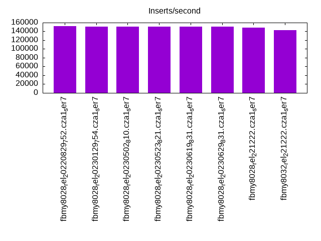
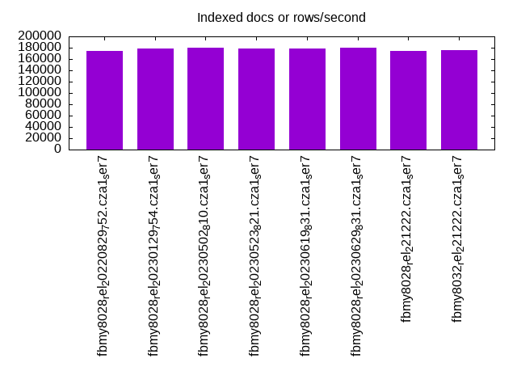
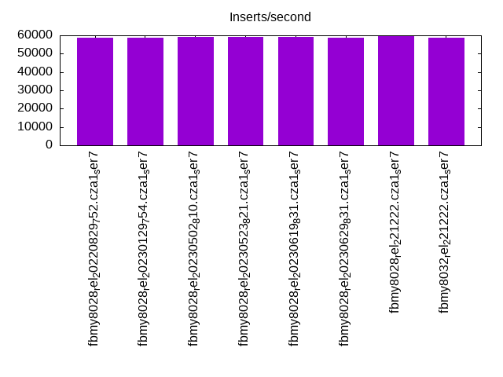
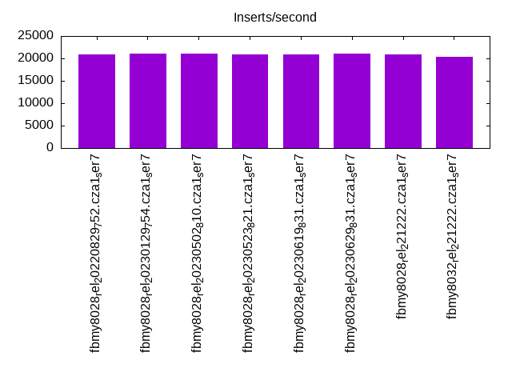
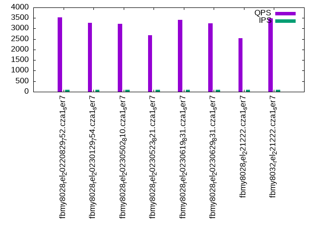
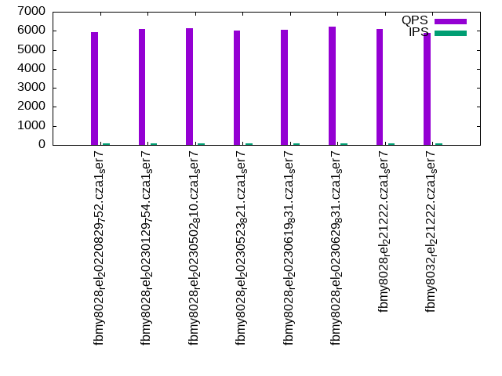
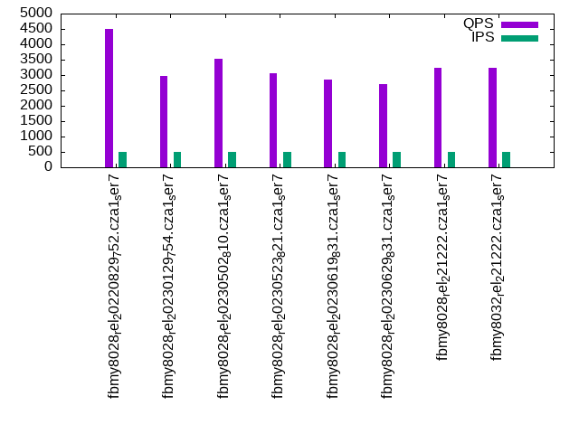
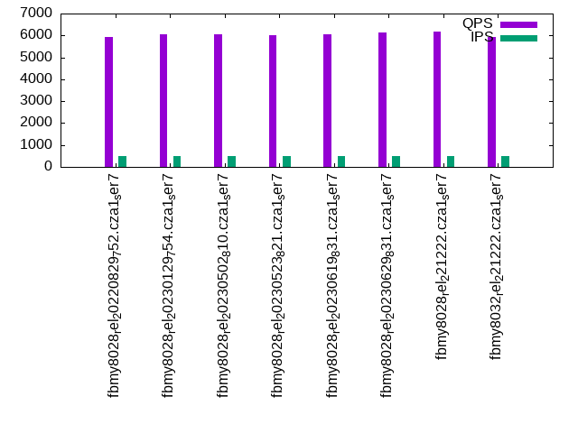
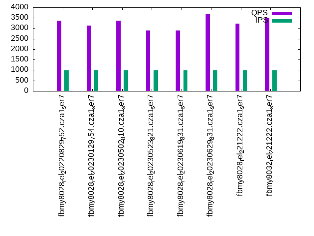
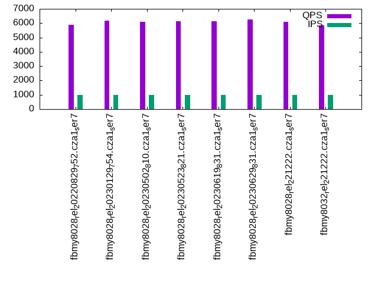

This is a report for the insert benchmark with 60M docs and 1 client(s). It is generated by scripts (bash, awk, sed) and Tufte might not be impressed. An overview of the insert benchmark is here and a short update is here. Below, by DBMS, I mean DBMS+version.config. An example is my8020.c10b40 where my means MySQL, 8020 is version 8.0.20 and c10b40 is the name for the configuration file.
The test server has a Beelink SER7 with 8 AMD cores, 32G RAM and an NVMe SSD. It is described here. The benchmark was run with 1 client and there were 1 or 3 connections per client (1 for queries or inserts without rate limits, 1+1 for rate limited inserts+deletes). It uses 1 table. It loads 60M rows per table without secondary indexes, creates 3 secondary indexes per table, then inserts 50m+50m rows per table with a delete per insert to avoid growing the table. It then does 6 read+write tests for 1800s each that do queries as fast as possible with 100,100,500,500,1000,1000 inserts/s and the same for deletes/s per client concurrent with the queries. The database is cached in memory. Clients and the DBMS share one server. The per-database configs are in the per-database subdirectories here.
The tested DBMS are:
The numbers are inserts/s for l.i0, l.i1 and l.i2, indexed docs (or rows) /s for l.x and queries/s for qr100, qp100 thru qr1000, qp1000" The values are the average rate over the entire test for inserts (IPS) and queries (QPS). The range of values for IPS and QPS is split into 3 parts: bottom 25%, middle 50%, top 25%. Values in the bottom 25% have a red background, values in the top 25% have a green background and values in the middle have no color. A gray background is used for values that can be ignored because the DBMS did not sustain the target insert rate. Red backgrounds are not used when the minimum value is within 80% of the max value.
| dbms | l.i0 | l.x | l.i1 | l.i2 | qr100 | qp100 | qr500 | qp500 | qr1000 | qp1000 |
|---|---|---|---|---|---|---|---|---|---|---|
| fbmy8028_rel_20220829_752.cza1_ser7 | 151515 | 174419 | 58651 | 20964 | 3541 | 5945 | 4506 | 5937 | 3368 | 5898 |
| fbmy8028_rel_20230129_754.cza1_ser7 | 151134 | 178572 | 58737 | 21053 | 3268 | 6113 | 2960 | 6061 | 3131 | 6162 |
| fbmy8028_rel_20230502_810.cza1_ser7 | 150754 | 179641 | 59259 | 21097 | 3225 | 6118 | 3536 | 6047 | 3375 | 6103 |
| fbmy8028_rel_20230523_821.cza1_ser7 | 151134 | 178042 | 59172 | 20920 | 2683 | 6030 | 3059 | 6002 | 2888 | 6137 |
| fbmy8028_rel_20230619_831.cza1_ser7 | 150754 | 178042 | 59084 | 20964 | 3408 | 6064 | 2852 | 6035 | 2890 | 6124 |
| fbmy8028_rel_20230629_831.cza1_ser7 | 150376 | 180180 | 58737 | 21142 | 3244 | 6201 | 2696 | 6151 | 3693 | 6254 |
| fbmy8028_rel_221222.cza1_ser7 | 148148 | 174927 | 59524 | 20877 | 2536 | 6086 | 3229 | 6158 | 3225 | 6101 |
| fbmy8032_rel_221222.cza1_ser7 | 143198 | 175953 | 58824 | 20284 | 3485 | 5903 | 3227 | 5909 | 3499 | 5865 |
This table has relative throughput, throughput for the DBMS relative to the DBMS in the first line, using the absolute throughput from the previous table. Values less than 0.95 have a yellow background. Values greater than 1.05 have a blue background.
| dbms | l.i0 | l.x | l.i1 | l.i2 | qr100 | qp100 | qr500 | qp500 | qr1000 | qp1000 |
|---|---|---|---|---|---|---|---|---|---|---|
| fbmy8028_rel_20220829_752.cza1_ser7 | 1.00 | 1.00 | 1.00 | 1.00 | 1.00 | 1.00 | 1.00 | 1.00 | 1.00 | 1.00 |
| fbmy8028_rel_20230129_754.cza1_ser7 | 1.00 | 1.02 | 1.00 | 1.00 | 0.92 | 1.03 | 0.66 | 1.02 | 0.93 | 1.04 |
| fbmy8028_rel_20230502_810.cza1_ser7 | 0.99 | 1.03 | 1.01 | 1.01 | 0.91 | 1.03 | 0.78 | 1.02 | 1.00 | 1.03 |
| fbmy8028_rel_20230523_821.cza1_ser7 | 1.00 | 1.02 | 1.01 | 1.00 | 0.76 | 1.01 | 0.68 | 1.01 | 0.86 | 1.04 |
| fbmy8028_rel_20230619_831.cza1_ser7 | 0.99 | 1.02 | 1.01 | 1.00 | 0.96 | 1.02 | 0.63 | 1.02 | 0.86 | 1.04 |
| fbmy8028_rel_20230629_831.cza1_ser7 | 0.99 | 1.03 | 1.00 | 1.01 | 0.92 | 1.04 | 0.60 | 1.04 | 1.10 | 1.06 |
| fbmy8028_rel_221222.cza1_ser7 | 0.98 | 1.00 | 1.01 | 1.00 | 0.72 | 1.02 | 0.72 | 1.04 | 0.96 | 1.03 |
| fbmy8032_rel_221222.cza1_ser7 | 0.95 | 1.01 | 1.00 | 0.97 | 0.98 | 0.99 | 0.72 | 1.00 | 1.04 | 0.99 |
This lists the average rate of inserts/s for the tests that do inserts concurrent with queries. For such tests the query rate is listed in the table above. The read+write tests are setup so that the insert rate should match the target rate every second. Cells that are not at least 95% of the target have a red background to indicate a failure to satisfy the target.
| dbms | qr100.L1 | qp100.L2 | qr500.L3 | qp500.L4 | qr1000.L5 | qp1000.L6 |
|---|---|---|---|---|---|---|
| fbmy8028_rel_20220829_752.cza1_ser7 | 100 | 100 | 499 | 499 | 998 | 998 |
| fbmy8028_rel_20230129_754.cza1_ser7 | 100 | 100 | 499 | 499 | 998 | 998 |
| fbmy8028_rel_20230502_810.cza1_ser7 | 100 | 100 | 499 | 499 | 998 | 998 |
| fbmy8028_rel_20230523_821.cza1_ser7 | 100 | 100 | 499 | 499 | 998 | 998 |
| fbmy8028_rel_20230619_831.cza1_ser7 | 100 | 100 | 499 | 499 | 998 | 998 |
| fbmy8028_rel_20230629_831.cza1_ser7 | 100 | 100 | 499 | 499 | 998 | 998 |
| fbmy8028_rel_221222.cza1_ser7 | 100 | 100 | 499 | 499 | 998 | 998 |
| fbmy8032_rel_221222.cza1_ser7 | 100 | 100 | 499 | 499 | 998 | 998 |
| target | 100 | 100 | 500 | 500 | 1000 | 1000 |
l.i0: load without secondary indexes. Graphs for performance per 1-second interval are here.
Average throughput:
Insert response time histogram: each cell has the percentage of responses that take <= the time in the header and max is the max response time in seconds. For the max column values in the top 25% of the range have a red background and in the bottom 25% of the range have a green background. The red background is not used when the min value is within 80% of the max value.
| dbms | 256us | 1ms | 4ms | 16ms | 64ms | 256ms | 1s | 4s | 16s | gt | max |
|---|---|---|---|---|---|---|---|---|---|---|---|
| fbmy8028_rel_20220829_752.cza1_ser7 | 99.490 | 0.339 | 0.129 | 0.038 | 0.004 | 0.110 | |||||
| fbmy8028_rel_20230129_754.cza1_ser7 | 99.487 | 0.342 | 0.128 | 0.039 | 0.004 | 0.135 | |||||
| fbmy8028_rel_20230502_810.cza1_ser7 | 99.480 | 0.348 | 0.135 | 0.033 | 0.004 | 0.111 | |||||
| fbmy8028_rel_20230523_821.cza1_ser7 | 99.492 | 0.338 | 0.130 | 0.036 | 0.004 | 0.112 | |||||
| fbmy8028_rel_20230619_831.cza1_ser7 | 99.501 | 0.328 | 0.126 | 0.041 | 0.004 | 0.107 | |||||
| fbmy8028_rel_20230629_831.cza1_ser7 | 99.444 | 0.385 | 0.133 | 0.035 | 0.004 | 0.107 | |||||
| fbmy8028_rel_221222.cza1_ser7 | 99.444 | 0.385 | 0.129 | 0.039 | 0.004 | 0.120 | |||||
| fbmy8032_rel_221222.cza1_ser7 | 99.299 | 0.529 | 0.130 | 0.038 | 0.004 | 0.096 |
Performance metrics for the DBMS listed above. Some are normalized by throughput, others are not. Legend for results is here.
ips qps rps rmbps wps wmbps rpq rkbpq wpi wkbpi csps cpups cspq cpupq dbgb1 dbgb2 rss maxop p50 p99 tag 151515 0 0 0.0 95.4 32.9 0.000 0.000 0.001 0.222 16798 9.8 0.111 5 1.8 3.4 0.7 0.110 151738 130666 fbmy8028_rel_20220829_752.cza1_ser7 151134 0 0 0.0 94.7 32.8 0.000 0.000 0.001 0.223 16771 9.8 0.111 5 1.8 3.4 0.7 0.135 151436 130558 fbmy8028_rel_20230129_754.cza1_ser7 150754 0 0 0.0 94.8 32.9 0.000 0.000 0.001 0.223 16789 9.9 0.111 5 1.8 3.4 0.7 0.111 151734 129060 fbmy8028_rel_20230502_810.cza1_ser7 151134 0 0 0.0 94.6 32.9 0.000 0.000 0.001 0.223 16786 9.9 0.111 5 1.8 3.4 0.7 0.112 151828 128855 fbmy8028_rel_20230523_821.cza1_ser7 150754 0 0 0.0 94.4 32.7 0.000 0.000 0.001 0.222 16707 9.9 0.111 5 1.8 3.4 0.7 0.107 151136 130053 fbmy8028_rel_20230619_831.cza1_ser7 150376 0 0 0.0 95.4 32.7 0.000 0.000 0.001 0.223 16603 9.8 0.110 5 1.8 3.4 0.7 0.107 150835 128564 fbmy8028_rel_20230629_831.cza1_ser7 148148 0 0 0.0 94.1 32.3 0.000 0.000 0.001 0.223 16494 10.1 0.111 5 1.8 3.4 0.7 0.120 148839 128264 fbmy8028_rel_221222.cza1_ser7 143198 0 0 0.0 91.3 31.2 0.000 0.000 0.001 0.223 16232 10.6 0.113 6 1.8 3.4 0.7 0.096 144338 115223 fbmy8032_rel_221222.cza1_ser7
l.x: create secondary indexes.
Average throughput:
Performance metrics for the DBMS listed above. Some are normalized by throughput, others are not. Legend for results is here.
ips qps rps rmbps wps wmbps rpq rkbpq wpi wkbpi csps cpups cspq cpupq dbgb1 dbgb2 rss maxop p50 p99 tag 174419 0 0 0.0 69.0 26.9 0.000 0.000 0.000 0.158 385 5.8 0.002 3 4.0 5.6 4.6 0.002 NA NA fbmy8028_rel_20220829_752.cza1_ser7 178572 0 0 0.0 69.1 27.7 0.000 0.000 0.000 0.159 375 5.8 0.002 3 4.0 5.6 4.6 0.009 NA NA fbmy8028_rel_20230129_754.cza1_ser7 179641 0 0 0.0 69.2 27.7 0.000 0.000 0.000 0.158 368 5.8 0.002 3 4.0 5.6 4.6 0.008 NA NA fbmy8028_rel_20230502_810.cza1_ser7 178042 0 0 0.0 69.1 27.6 0.000 0.000 0.000 0.159 369 5.8 0.002 3 4.0 5.6 4.6 0.009 NA NA fbmy8028_rel_20230523_821.cza1_ser7 178042 0 0 0.0 69.1 27.6 0.000 0.000 0.000 0.159 381 5.8 0.002 3 4.0 5.6 4.6 0.002 NA NA fbmy8028_rel_20230619_831.cza1_ser7 180180 0 0 0.0 69.4 27.8 0.000 0.000 0.000 0.158 360 5.8 0.002 3 4.0 5.6 4.6 0.002 NA NA fbmy8028_rel_20230629_831.cza1_ser7 174927 0 0 0.0 67.4 27.0 0.000 0.000 0.000 0.158 352 5.8 0.002 3 4.0 5.6 4.6 0.002 NA NA fbmy8028_rel_221222.cza1_ser7 175953 0 0 0.0 68.0 27.2 0.000 0.000 0.000 0.158 565 5.8 0.003 3 4.0 5.6 4.6 0.008 NA NA fbmy8032_rel_221222.cza1_ser7
l.i1: continue load after secondary indexes created with 50 inserts per transaction. Graphs for performance per 1-second interval are here.
Average throughput:
Insert response time histogram: each cell has the percentage of responses that take <= the time in the header and max is the max response time in seconds. For the max column values in the top 25% of the range have a red background and in the bottom 25% of the range have a green background. The red background is not used when the min value is within 80% of the max value.
| dbms | 256us | 1ms | 4ms | 16ms | 64ms | 256ms | 1s | 4s | 16s | gt | max |
|---|---|---|---|---|---|---|---|---|---|---|---|
| fbmy8028_rel_20220829_752.cza1_ser7 | 96.677 | 3.129 | 0.168 | 0.021 | 0.004 | 0.123 | |||||
| fbmy8028_rel_20230129_754.cza1_ser7 | 96.949 | 2.859 | 0.168 | 0.020 | 0.004 | 0.107 | |||||
| fbmy8028_rel_20230502_810.cza1_ser7 | 97.836 | 1.970 | 0.167 | 0.024 | 0.004 | 0.127 | |||||
| fbmy8028_rel_20230523_821.cza1_ser7 | 97.457 | 2.348 | 0.166 | 0.025 | 0.004 | 0.125 | |||||
| fbmy8028_rel_20230619_831.cza1_ser7 | 97.484 | 2.321 | 0.166 | 0.025 | 0.004 | 0.128 | |||||
| fbmy8028_rel_20230629_831.cza1_ser7 | 97.596 | 2.210 | 0.165 | 0.025 | 0.004 | 0.115 | |||||
| fbmy8028_rel_221222.cza1_ser7 | 97.193 | 2.614 | 0.167 | 0.023 | 0.004 | 0.108 | |||||
| fbmy8032_rel_221222.cza1_ser7 | 97.305 | 2.501 | 0.169 | 0.021 | 0.004 | 0.101 |
Delete response time histogram: each cell has the percentage of responses that take <= the time in the header and max is the max response time in seconds. For the max column values in the top 25% of the range have a red background and in the bottom 25% of the range have a green background. The red background is not used when the min value is within 80% of the max value.
| dbms | 256us | 1ms | 4ms | 16ms | 64ms | 256ms | 1s | 4s | 16s | gt | max |
|---|---|---|---|---|---|---|---|---|---|---|---|
| fbmy8028_rel_20220829_752.cza1_ser7 | 97.172 | 2.626 | 0.168 | 0.030 | 0.004 | 0.121 | |||||
| fbmy8028_rel_20230129_754.cza1_ser7 | 97.560 | 2.243 | 0.166 | 0.028 | 0.004 | 0.119 | |||||
| fbmy8028_rel_20230502_810.cza1_ser7 | 98.266 | 1.535 | 0.163 | 0.032 | 0.004 | 0.115 | |||||
| fbmy8028_rel_20230523_821.cza1_ser7 | 97.944 | 1.856 | 0.163 | 0.033 | 0.004 | 0.114 | |||||
| fbmy8028_rel_20230619_831.cza1_ser7 | 97.921 | 1.880 | 0.161 | 0.034 | 0.004 | 0.119 | |||||
| fbmy8028_rel_20230629_831.cza1_ser7 | 97.805 | 1.993 | 0.162 | 0.035 | 0.004 | 0.110 | |||||
| fbmy8028_rel_221222.cza1_ser7 | 97.655 | 2.143 | 0.162 | 0.036 | 0.004 | 0.114 | |||||
| fbmy8032_rel_221222.cza1_ser7 | 97.799 | 2.000 | 0.165 | 0.032 | 0.004 | 0.094 |
Performance metrics for the DBMS listed above. Some are normalized by throughput, others are not. Legend for results is here.
ips qps rps rmbps wps wmbps rpq rkbpq wpi wkbpi csps cpups cspq cpupq dbgb1 dbgb2 rss maxop p50 p99 tag 58651 0 26 3.3 352.1 139.3 0.000 0.057 0.006 2.432 29002 24.3 0.494 33 5.4 6.0 8.7 0.123 58935 48946 fbmy8028_rel_20220829_752.cza1_ser7 58737 0 26 3.3 350.3 138.9 0.000 0.057 0.006 2.421 29068 24.6 0.495 34 5.6 6.2 8.7 0.107 59086 49596 fbmy8028_rel_20230129_754.cza1_ser7 59259 0 27 3.3 295.3 114.0 0.000 0.058 0.005 1.969 28417 23.0 0.480 31 4.7 5.3 6.5 0.127 59535 49984 fbmy8028_rel_20230502_810.cza1_ser7 59172 0 27 3.3 299.2 115.7 0.000 0.057 0.005 2.002 28405 23.0 0.480 31 4.8 5.4 6.6 0.125 59361 50195 fbmy8028_rel_20230523_821.cza1_ser7 59084 0 27 3.3 294.1 114.0 0.000 0.057 0.005 1.976 28277 23.6 0.479 32 4.9 5.5 6.7 0.128 59386 48498 fbmy8028_rel_20230619_831.cza1_ser7 58737 0 26 3.3 288.7 112.2 0.000 0.057 0.005 1.956 28404 23.2 0.484 32 4.7 5.3 6.7 0.115 59183 48437 fbmy8028_rel_20230629_831.cza1_ser7 59524 0 587 3.3 324.4 127.3 0.010 0.057 0.005 2.190 30116 23.9 0.506 32 4.6 5.2 6.9 0.108 59886 49346 fbmy8028_rel_221222.cza1_ser7 58824 0 583 3.3 314.6 123.2 0.010 0.058 0.005 2.145 30005 23.6 0.510 32 5.0 5.6 6.8 0.101 59035 49946 fbmy8032_rel_221222.cza1_ser7
l.i2: continue load after secondary indexes created with 5 inserts per transaction. Graphs for performance per 1-second interval are here.
Average throughput:
Insert response time histogram: each cell has the percentage of responses that take <= the time in the header and max is the max response time in seconds. For the max column values in the top 25% of the range have a red background and in the bottom 25% of the range have a green background. The red background is not used when the min value is within 80% of the max value.
| dbms | 256us | 1ms | 4ms | 16ms | 64ms | 256ms | 1s | 4s | 16s | gt | max |
|---|---|---|---|---|---|---|---|---|---|---|---|
| fbmy8028_rel_20220829_752.cza1_ser7 | 99.253 | 0.703 | nonzero | 0.042 | 0.001 | 0.001 | 0.120 | ||||
| fbmy8028_rel_20230129_754.cza1_ser7 | 99.300 | 0.656 | 0.001 | 0.041 | 0.001 | nonzero | 0.104 | ||||
| fbmy8028_rel_20230502_810.cza1_ser7 | 99.303 | 0.652 | 0.001 | 0.042 | 0.002 | nonzero | 0.111 | ||||
| fbmy8028_rel_20230523_821.cza1_ser7 | 99.213 | 0.743 | 0.001 | 0.042 | 0.001 | 0.001 | 0.109 | ||||
| fbmy8028_rel_20230619_831.cza1_ser7 | 99.345 | 0.610 | nonzero | 0.042 | 0.001 | 0.001 | 0.112 | ||||
| fbmy8028_rel_20230629_831.cza1_ser7 | 99.235 | 0.720 | 0.001 | 0.042 | 0.002 | nonzero | 0.104 | ||||
| fbmy8028_rel_221222.cza1_ser7 | 99.200 | 0.755 | nonzero | 0.042 | 0.001 | 0.001 | 0.112 | ||||
| fbmy8032_rel_221222.cza1_ser7 | 99.001 | 0.954 | 0.001 | 0.042 | 0.002 | nonzero | 0.097 |
Delete response time histogram: each cell has the percentage of responses that take <= the time in the header and max is the max response time in seconds. For the max column values in the top 25% of the range have a red background and in the bottom 25% of the range have a green background. The red background is not used when the min value is within 80% of the max value.
| dbms | 256us | 1ms | 4ms | 16ms | 64ms | 256ms | 1s | 4s | 16s | gt | max |
|---|---|---|---|---|---|---|---|---|---|---|---|
| fbmy8028_rel_20220829_752.cza1_ser7 | 97.153 | 2.802 | nonzero | 0.043 | 0.001 | 0.001 | 0.107 | ||||
| fbmy8028_rel_20230129_754.cza1_ser7 | 97.247 | 2.708 | 0.001 | 0.043 | 0.002 | nonzero | 0.094 | ||||
| fbmy8028_rel_20230502_810.cza1_ser7 | 97.366 | 2.589 | 0.001 | 0.043 | 0.002 | nonzero | 0.104 | ||||
| fbmy8028_rel_20230523_821.cza1_ser7 | 96.607 | 3.347 | 0.001 | 0.044 | 0.001 | 0.001 | 0.100 | ||||
| fbmy8028_rel_20230619_831.cza1_ser7 | 97.246 | 2.708 | 0.001 | 0.044 | 0.001 | 0.001 | 0.099 | ||||
| fbmy8028_rel_20230629_831.cza1_ser7 | 97.144 | 2.811 | 0.001 | 0.043 | 0.002 | nonzero | 0.095 | ||||
| fbmy8028_rel_221222.cza1_ser7 | 97.138 | 2.817 | 0.001 | 0.043 | 0.001 | 0.001 | 0.111 | ||||
| fbmy8032_rel_221222.cza1_ser7 | 96.013 | 3.940 | 0.001 | 0.044 | 0.002 | nonzero | 0.086 |
Performance metrics for the DBMS listed above. Some are normalized by throughput, others are not. Legend for results is here.
ips qps rps rmbps wps wmbps rpq rkbpq wpi wkbpi csps cpups cspq cpupq dbgb1 dbgb2 rss maxop p50 p99 tag 20964 0 0 0.0 252.6 89.7 0.000 0.000 0.012 4.379 86803 20.5 4.141 78 4.3 4.6 10.7 0.120 21018 18528 fbmy8028_rel_20220829_752.cza1_ser7 21053 0 0 0.0 248.7 88.8 0.000 0.000 0.012 4.321 86461 20.6 4.107 78 4.3 4.6 10.8 0.104 21121 18796 fbmy8028_rel_20230129_754.cza1_ser7 21097 0 0 0.0 229.1 82.2 0.000 0.000 0.011 3.992 86944 20.3 4.121 77 4.2 4.5 7.9 0.111 21182 18836 fbmy8028_rel_20230502_810.cza1_ser7 20920 0 0 0.0 232.7 83.8 0.000 0.000 0.011 4.104 86187 20.4 4.120 78 4.5 4.8 8.0 0.109 20996 18030 fbmy8028_rel_20230523_821.cza1_ser7 20964 0 0 0.0 210.9 75.8 0.000 0.000 0.010 3.704 86351 20.3 4.119 77 4.4 4.7 7.8 0.112 21070 18274 fbmy8028_rel_20230619_831.cza1_ser7 21142 0 0 0.0 220.5 78.8 0.000 0.000 0.010 3.817 86493 20.4 4.091 77 4.4 4.7 7.8 0.104 21117 18929 fbmy8028_rel_20230629_831.cza1_ser7 20877 0 0 0.0 238.4 85.1 0.000 0.000 0.011 4.175 85922 20.3 4.116 78 4.2 4.6 8.4 0.112 20922 18115 fbmy8028_rel_221222.cza1_ser7 20284 0 0 0.0 238.9 86.2 0.000 0.000 0.012 4.352 84031 20.7 4.143 82 4.3 4.6 8.5 0.097 20339 17825 fbmy8032_rel_221222.cza1_ser7
qr100.L1: range queries with 100 insert/s per client. Graphs for performance per 1-second interval are here.
Average throughput:
Query response time histogram: each cell has the percentage of responses that take <= the time in the header and max is the max response time in seconds. For max values in the top 25% of the range have a red background and in the bottom 25% of the range have a green background. The red background is not used when the min value is within 80% of the max value.
| dbms | 256us | 1ms | 4ms | 16ms | 64ms | 256ms | 1s | 4s | 16s | gt | max |
|---|---|---|---|---|---|---|---|---|---|---|---|
| fbmy8028_rel_20220829_752.cza1_ser7 | 77.087 | 16.793 | 6.120 | nonzero | 0.007 | ||||||
| fbmy8028_rel_20230129_754.cza1_ser7 | 66.505 | 33.471 | 0.024 | nonzero | 0.006 | ||||||
| fbmy8028_rel_20230502_810.cza1_ser7 | 66.420 | 26.432 | 7.147 | 0.004 | |||||||
| fbmy8028_rel_20230523_821.cza1_ser7 | 66.319 | 20.223 | 13.458 | nonzero | 0.039 | ||||||
| fbmy8028_rel_20230619_831.cza1_ser7 | 77.510 | 17.669 | 4.821 | 0.003 | |||||||
| fbmy8028_rel_20230629_831.cza1_ser7 | 74.696 | 24.934 | 0.370 | nonzero | 0.039 | ||||||
| fbmy8028_rel_221222.cza1_ser7 | 69.046 | 16.602 | 14.352 | nonzero | 0.040 | ||||||
| fbmy8032_rel_221222.cza1_ser7 | 72.896 | 20.157 | 6.948 | nonzero | 0.036 |
Insert response time histogram: each cell has the percentage of responses that take <= the time in the header and max is the max response time in seconds. For max values in the top 25% of the range have a red background and in the bottom 25% of the range have a green background. The red background is not used when the min value is within 80% of the max value.
| dbms | 256us | 1ms | 4ms | 16ms | 64ms | 256ms | 1s | 4s | 16s | gt | max |
|---|---|---|---|---|---|---|---|---|---|---|---|
| fbmy8028_rel_20220829_752.cza1_ser7 | 9.333 | 90.333 | 0.306 | 0.028 | 0.016 | ||||||
| fbmy8028_rel_20230129_754.cza1_ser7 | 1.083 | 98.444 | 0.444 | 0.028 | 0.017 | ||||||
| fbmy8028_rel_20230502_810.cza1_ser7 | 1.417 | 97.972 | 0.556 | 0.056 | 0.018 | ||||||
| fbmy8028_rel_20230523_821.cza1_ser7 | 0.889 | 98.667 | 0.417 | 0.028 | 0.016 | ||||||
| fbmy8028_rel_20230619_831.cza1_ser7 | 1.167 | 98.306 | 0.472 | 0.056 | 0.017 | ||||||
| fbmy8028_rel_20230629_831.cza1_ser7 | 0.722 | 98.861 | 0.361 | 0.056 | 0.020 | ||||||
| fbmy8028_rel_221222.cza1_ser7 | 0.667 | 98.833 | 0.444 | 0.056 | 0.017 | ||||||
| fbmy8032_rel_221222.cza1_ser7 | 0.361 | 99.139 | 0.444 | 0.056 | 0.017 |
Delete response time histogram: each cell has the percentage of responses that take <= the time in the header and max is the max response time in seconds. For max values in the top 25% of the range have a red background and in the bottom 25% of the range have a green background. The red background is not used when the min value is within 80% of the max value.
| dbms | 256us | 1ms | 4ms | 16ms | 64ms | 256ms | 1s | 4s | 16s | gt | max |
|---|---|---|---|---|---|---|---|---|---|---|---|
| fbmy8028_rel_20220829_752.cza1_ser7 | 0.306 | 99.361 | 0.306 | 0.028 | 0.016 | ||||||
| fbmy8028_rel_20230129_754.cza1_ser7 | 4.139 | 95.444 | 0.389 | 0.028 | 0.016 | ||||||
| fbmy8028_rel_20230502_810.cza1_ser7 | 4.333 | 95.222 | 0.417 | 0.028 | 0.017 | ||||||
| fbmy8028_rel_20230523_821.cza1_ser7 | 4.083 | 95.611 | 0.278 | 0.028 | 0.016 | ||||||
| fbmy8028_rel_20230619_831.cza1_ser7 | 3.028 | 96.556 | 0.389 | 0.028 | 0.017 | ||||||
| fbmy8028_rel_20230629_831.cza1_ser7 | 0.944 | 98.694 | 0.306 | 0.056 | 0.020 | ||||||
| fbmy8028_rel_221222.cza1_ser7 | 1.167 | 98.472 | 0.333 | 0.028 | 0.017 | ||||||
| fbmy8032_rel_221222.cza1_ser7 | 0.333 | 99.278 | 0.361 | 0.028 | 0.017 |
Performance metrics for the DBMS listed above. Some are normalized by throughput, others are not. Legend for results is here.
ips qps rps rmbps wps wmbps rpq rkbpq wpi wkbpi csps cpups cspq cpupq dbgb1 dbgb2 rss maxop p50 p99 tag 100 3541 0 0.0 4.7 0.5 0.000 0.000 0.047 5.346 13803 6.6 3.898 149 4.2 4.4 11.2 0.007 3548 3291 fbmy8028_rel_20220829_752.cza1_ser7 100 3268 0 0.0 4.7 0.5 0.000 0.000 0.047 5.201 12780 6.6 3.910 162 4.2 4.4 11.3 0.006 3276 3069 fbmy8028_rel_20230129_754.cza1_ser7 100 3225 0 0.0 5.0 0.6 0.000 0.000 0.050 6.176 12625 6.7 3.915 166 4.2 4.4 8.3 0.004 3213 3021 fbmy8028_rel_20230502_810.cza1_ser7 100 2683 0 0.0 4.6 0.5 0.000 0.000 0.046 4.955 10538 6.5 3.927 194 4.2 4.4 8.5 0.039 2685 2494 fbmy8028_rel_20230523_821.cza1_ser7 100 3408 0 0.0 4.7 0.5 0.000 0.000 0.047 5.254 13289 6.6 3.899 155 4.2 4.4 8.2 0.003 3419 3148 fbmy8028_rel_20230619_831.cza1_ser7 100 3244 0 0.0 4.8 0.5 0.000 0.000 0.048 5.455 12676 6.7 3.908 165 4.2 4.4 8.2 0.039 3245 3052 fbmy8028_rel_20230629_831.cza1_ser7 100 2536 0 0.0 5.2 0.7 0.000 0.000 0.052 7.036 9987 6.4 3.937 202 4.1 4.4 9.0 0.040 2381 2238 fbmy8028_rel_221222.cza1_ser7 100 3485 0 0.0 5.0 0.6 0.000 0.000 0.050 6.092 13786 6.4 3.956 147 4.2 4.4 9.0 0.036 3900 2685 fbmy8032_rel_221222.cza1_ser7
qp100.L2: point queries with 100 insert/s per client. Graphs for performance per 1-second interval are here.
Average throughput:
Query response time histogram: each cell has the percentage of responses that take <= the time in the header and max is the max response time in seconds. For max values in the top 25% of the range have a red background and in the bottom 25% of the range have a green background. The red background is not used when the min value is within 80% of the max value.
| dbms | 256us | 1ms | 4ms | 16ms | 64ms | 256ms | 1s | 4s | 16s | gt | max |
|---|---|---|---|---|---|---|---|---|---|---|---|
| fbmy8028_rel_20220829_752.cza1_ser7 | 99.671 | 0.329 | nonzero | 0.002 | |||||||
| fbmy8028_rel_20230129_754.cza1_ser7 | 99.634 | 0.366 | nonzero | 0.001 | |||||||
| fbmy8028_rel_20230502_810.cza1_ser7 | 99.621 | 0.379 | 0.001 | ||||||||
| fbmy8028_rel_20230523_821.cza1_ser7 | 99.480 | 0.520 | nonzero | 0.001 | |||||||
| fbmy8028_rel_20230619_831.cza1_ser7 | 99.637 | 0.363 | nonzero | 0.001 | |||||||
| fbmy8028_rel_20230629_831.cza1_ser7 | 99.579 | 0.421 | nonzero | 0.001 | |||||||
| fbmy8028_rel_221222.cza1_ser7 | 99.627 | 0.373 | nonzero | 0.001 | |||||||
| fbmy8032_rel_221222.cza1_ser7 | 99.575 | 0.425 | nonzero | 0.001 |
Insert response time histogram: each cell has the percentage of responses that take <= the time in the header and max is the max response time in seconds. For max values in the top 25% of the range have a red background and in the bottom 25% of the range have a green background. The red background is not used when the min value is within 80% of the max value.
| dbms | 256us | 1ms | 4ms | 16ms | 64ms | 256ms | 1s | 4s | 16s | gt | max |
|---|---|---|---|---|---|---|---|---|---|---|---|
| fbmy8028_rel_20220829_752.cza1_ser7 | 3.444 | 96.139 | 0.361 | 0.056 | 0.017 | ||||||
| fbmy8028_rel_20230129_754.cza1_ser7 | 1.583 | 97.944 | 0.417 | 0.056 | 0.022 | ||||||
| fbmy8028_rel_20230502_810.cza1_ser7 | 0.861 | 98.444 | 0.583 | 0.111 | 0.017 | ||||||
| fbmy8028_rel_20230523_821.cza1_ser7 | 0.833 | 98.750 | 0.361 | 0.056 | 0.017 | ||||||
| fbmy8028_rel_20230619_831.cza1_ser7 | 1.861 | 97.528 | 0.556 | 0.056 | 0.017 | ||||||
| fbmy8028_rel_20230629_831.cza1_ser7 | 1.444 | 98.111 | 0.389 | 0.056 | 0.017 | ||||||
| fbmy8028_rel_221222.cza1_ser7 | 1.111 | 98.472 | 0.361 | 0.056 | 0.017 | ||||||
| fbmy8032_rel_221222.cza1_ser7 | 1.111 | 98.417 | 0.417 | 0.056 | 0.017 |
Delete response time histogram: each cell has the percentage of responses that take <= the time in the header and max is the max response time in seconds. For max values in the top 25% of the range have a red background and in the bottom 25% of the range have a green background. The red background is not used when the min value is within 80% of the max value.
| dbms | 256us | 1ms | 4ms | 16ms | 64ms | 256ms | 1s | 4s | 16s | gt | max |
|---|---|---|---|---|---|---|---|---|---|---|---|
| fbmy8028_rel_20220829_752.cza1_ser7 | 1.528 | 98.056 | 0.361 | 0.056 | 0.017 | ||||||
| fbmy8028_rel_20230129_754.cza1_ser7 | 2.389 | 97.167 | 0.389 | 0.056 | 0.022 | ||||||
| fbmy8028_rel_20230502_810.cza1_ser7 | 2.806 | 96.583 | 0.528 | 0.083 | 0.017 | ||||||
| fbmy8028_rel_20230523_821.cza1_ser7 | 1.167 | 98.444 | 0.361 | 0.028 | 0.017 | ||||||
| fbmy8028_rel_20230619_831.cza1_ser7 | 4.472 | 95.083 | 0.389 | 0.056 | 0.017 | ||||||
| fbmy8028_rel_20230629_831.cza1_ser7 | 3.444 | 96.250 | 0.278 | 0.028 | 0.017 | ||||||
| fbmy8028_rel_221222.cza1_ser7 | 3.639 | 96.028 | 0.306 | 0.028 | 0.016 | ||||||
| fbmy8032_rel_221222.cza1_ser7 | 0.806 | 98.778 | 0.389 | 0.028 | 0.017 |
Performance metrics for the DBMS listed above. Some are normalized by throughput, others are not. Legend for results is here.
ips qps rps rmbps wps wmbps rpq rkbpq wpi wkbpi csps cpups cspq cpupq dbgb1 dbgb2 rss maxop p50 p99 tag 100 5945 0 0.0 6.8 1.7 0.000 0.000 0.068 17.035 24195 6.9 4.070 93 4.1 4.3 17.5 0.002 5848 4714 fbmy8028_rel_20220829_752.cza1_ser7 100 6113 0 0.0 4.8 0.7 0.000 0.000 0.048 7.097 24773 6.8 4.053 89 4.1 4.4 14.6 0.001 5961 5338 fbmy8028_rel_20230129_754.cza1_ser7 100 6118 0 0.0 4.3 0.5 0.000 0.000 0.043 4.740 24780 6.5 4.050 85 4.2 4.4 11.4 0.001 5882 5338 fbmy8028_rel_20230502_810.cza1_ser7 100 6030 0 0.0 4.7 0.6 0.000 0.000 0.047 6.046 24458 6.3 4.056 84 4.2 4.4 11.5 0.001 5865 5306 fbmy8028_rel_20230523_821.cza1_ser7 100 6064 0 0.0 4.7 0.6 0.000 0.000 0.047 6.521 24571 6.4 4.052 84 4.1 4.4 11.2 0.001 5879 5371 fbmy8028_rel_20230619_831.cza1_ser7 100 6201 0 0.0 4.4 0.5 0.000 0.000 0.044 4.963 25099 6.6 4.047 85 4.2 4.5 11.2 0.001 5918 5418 fbmy8028_rel_20230629_831.cza1_ser7 100 6086 0 0.0 4.3 0.4 0.000 0.000 0.043 4.601 24662 6.5 4.052 85 4.2 4.4 12.0 0.001 5881 5418 fbmy8028_rel_221222.cza1_ser7 100 5903 0 0.0 4.3 0.5 0.000 0.000 0.043 4.981 24110 6.3 4.084 85 4.2 4.4 12.1 0.001 5723 5546 fbmy8032_rel_221222.cza1_ser7
qr500.L3: range queries with 500 insert/s per client. Graphs for performance per 1-second interval are here.
Average throughput:
Query response time histogram: each cell has the percentage of responses that take <= the time in the header and max is the max response time in seconds. For max values in the top 25% of the range have a red background and in the bottom 25% of the range have a green background. The red background is not used when the min value is within 80% of the max value.
| dbms | 256us | 1ms | 4ms | 16ms | 64ms | 256ms | 1s | 4s | 16s | gt | max |
|---|---|---|---|---|---|---|---|---|---|---|---|
| fbmy8028_rel_20220829_752.cza1_ser7 | 76.090 | 22.219 | 1.691 | nonzero | nonzero | 0.035 | |||||
| fbmy8028_rel_20230129_754.cza1_ser7 | 71.030 | 28.811 | 0.159 | nonzero | nonzero | 0.037 | |||||
| fbmy8028_rel_20230502_810.cza1_ser7 | 70.203 | 26.960 | 2.837 | nonzero | 0.035 | ||||||
| fbmy8028_rel_20230523_821.cza1_ser7 | 70.421 | 22.833 | 6.745 | nonzero | nonzero | 0.036 | |||||
| fbmy8028_rel_20230619_831.cza1_ser7 | 67.497 | 24.878 | 7.624 | nonzero | 0.037 | ||||||
| fbmy8028_rel_20230629_831.cza1_ser7 | 66.668 | 21.321 | 12.011 | nonzero | nonzero | 0.035 | |||||
| fbmy8028_rel_221222.cza1_ser7 | 72.863 | 21.889 | 5.247 | nonzero | 0.036 | ||||||
| fbmy8032_rel_221222.cza1_ser7 | 68.580 | 25.963 | 5.457 | nonzero | 0.036 |
Insert response time histogram: each cell has the percentage of responses that take <= the time in the header and max is the max response time in seconds. For max values in the top 25% of the range have a red background and in the bottom 25% of the range have a green background. The red background is not used when the min value is within 80% of the max value.
| dbms | 256us | 1ms | 4ms | 16ms | 64ms | 256ms | 1s | 4s | 16s | gt | max |
|---|---|---|---|---|---|---|---|---|---|---|---|
| fbmy8028_rel_20220829_752.cza1_ser7 | 1.339 | 98.344 | 0.239 | 0.078 | 0.018 | ||||||
| fbmy8028_rel_20230129_754.cza1_ser7 | 2.300 | 97.378 | 0.233 | 0.089 | 0.017 | ||||||
| fbmy8028_rel_20230502_810.cza1_ser7 | 0.917 | 98.633 | 0.378 | 0.072 | 0.017 | ||||||
| fbmy8028_rel_20230523_821.cza1_ser7 | 1.589 | 98.089 | 0.244 | 0.078 | 0.023 | ||||||
| fbmy8028_rel_20230619_831.cza1_ser7 | 3.400 | 96.206 | 0.328 | 0.067 | 0.017 | ||||||
| fbmy8028_rel_20230629_831.cza1_ser7 | 1.867 | 97.817 | 0.233 | 0.083 | 0.017 | ||||||
| fbmy8028_rel_221222.cza1_ser7 | 1.483 | 98.206 | 0.244 | 0.067 | 0.017 | ||||||
| fbmy8032_rel_221222.cza1_ser7 | 1.378 | 98.289 | 0.256 | 0.078 | 0.017 |
Delete response time histogram: each cell has the percentage of responses that take <= the time in the header and max is the max response time in seconds. For max values in the top 25% of the range have a red background and in the bottom 25% of the range have a green background. The red background is not used when the min value is within 80% of the max value.
| dbms | 256us | 1ms | 4ms | 16ms | 64ms | 256ms | 1s | 4s | 16s | gt | max |
|---|---|---|---|---|---|---|---|---|---|---|---|
| fbmy8028_rel_20220829_752.cza1_ser7 | 5.439 | 94.267 | 0.217 | 0.078 | 0.017 | ||||||
| fbmy8028_rel_20230129_754.cza1_ser7 | 3.772 | 95.933 | 0.211 | 0.083 | 0.018 | ||||||
| fbmy8028_rel_20230502_810.cza1_ser7 | 8.378 | 91.172 | 0.378 | 0.072 | 0.054 | ||||||
| fbmy8028_rel_20230523_821.cza1_ser7 | 3.511 | 96.183 | 0.228 | 0.078 | 0.023 | ||||||
| fbmy8028_rel_20230619_831.cza1_ser7 | 6.778 | 92.839 | 0.322 | 0.061 | 0.017 | ||||||
| fbmy8028_rel_20230629_831.cza1_ser7 | 1.606 | 98.122 | 0.194 | 0.078 | 0.017 | ||||||
| fbmy8028_rel_221222.cza1_ser7 | 5.311 | 94.400 | 0.222 | 0.067 | 0.022 | ||||||
| fbmy8032_rel_221222.cza1_ser7 | 3.361 | 96.311 | 0.261 | 0.067 | 0.017 |
Performance metrics for the DBMS listed above. Some are normalized by throughput, others are not. Legend for results is here.
ips qps rps rmbps wps wmbps rpq rkbpq wpi wkbpi csps cpups cspq cpupq dbgb1 dbgb2 rss maxop p50 p99 tag 499 4506 1 0.1 10.1 3.1 0.000 0.024 0.020 6.379 17788 6.7 3.947 119 4.2 4.6 18.4 0.035 4443 3740 fbmy8028_rel_20220829_752.cza1_ser7 499 2960 0 0.0 10.1 3.2 0.000 0.000 0.020 6.592 11898 6.9 4.020 187 4.2 4.6 15.9 0.037 2829 2461 fbmy8028_rel_20230129_754.cza1_ser7 499 3536 0 0.0 9.7 3.1 0.000 0.000 0.019 6.306 14103 6.9 3.988 156 4.2 4.7 12.5 0.035 3548 2877 fbmy8028_rel_20230502_810.cza1_ser7 499 3059 0 0.0 9.9 3.1 0.000 0.000 0.020 6.419 12295 6.8 4.019 178 4.2 4.6 12.7 0.036 3053 2637 fbmy8028_rel_20230523_821.cza1_ser7 499 2852 0 0.0 9.9 3.1 0.000 0.000 0.020 6.260 11801 6.9 4.138 194 4.2 4.6 12.5 0.037 2814 2556 fbmy8028_rel_20230619_831.cza1_ser7 499 2696 0 0.0 10.1 3.2 0.000 0.000 0.020 6.522 10899 6.7 4.043 199 4.2 4.6 12.6 0.035 2701 2349 fbmy8028_rel_20230629_831.cza1_ser7 499 3229 0 0.0 9.7 3.1 0.000 0.000 0.019 6.266 12918 6.8 4.001 168 4.2 4.6 13.2 0.036 3133 2685 fbmy8028_rel_221222.cza1_ser7 499 3227 0 0.0 10.2 3.3 0.000 0.000 0.020 6.672 13112 6.9 4.063 171 4.2 4.6 13.3 0.036 3212 2749 fbmy8032_rel_221222.cza1_ser7
qp500.L4: point queries with 500 insert/s per client. Graphs for performance per 1-second interval are here.
Average throughput:
Query response time histogram: each cell has the percentage of responses that take <= the time in the header and max is the max response time in seconds. For max values in the top 25% of the range have a red background and in the bottom 25% of the range have a green background. The red background is not used when the min value is within 80% of the max value.
| dbms | 256us | 1ms | 4ms | 16ms | 64ms | 256ms | 1s | 4s | 16s | gt | max |
|---|---|---|---|---|---|---|---|---|---|---|---|
| fbmy8028_rel_20220829_752.cza1_ser7 | 99.527 | 0.473 | nonzero | 0.001 | |||||||
| fbmy8028_rel_20230129_754.cza1_ser7 | 99.600 | 0.400 | nonzero | 0.001 | |||||||
| fbmy8028_rel_20230502_810.cza1_ser7 | 99.619 | 0.381 | nonzero | 0.002 | |||||||
| fbmy8028_rel_20230523_821.cza1_ser7 | 99.494 | 0.506 | nonzero | 0.001 | |||||||
| fbmy8028_rel_20230619_831.cza1_ser7 | 99.625 | 0.375 | nonzero | 0.001 | |||||||
| fbmy8028_rel_20230629_831.cza1_ser7 | 99.567 | 0.433 | nonzero | nonzero | 0.004 | ||||||
| fbmy8028_rel_221222.cza1_ser7 | 99.538 | 0.462 | nonzero | nonzero | 0.005 | ||||||
| fbmy8032_rel_221222.cza1_ser7 | 99.487 | 0.513 | nonzero | 0.004 |
Insert response time histogram: each cell has the percentage of responses that take <= the time in the header and max is the max response time in seconds. For max values in the top 25% of the range have a red background and in the bottom 25% of the range have a green background. The red background is not used when the min value is within 80% of the max value.
| dbms | 256us | 1ms | 4ms | 16ms | 64ms | 256ms | 1s | 4s | 16s | gt | max |
|---|---|---|---|---|---|---|---|---|---|---|---|
| fbmy8028_rel_20220829_752.cza1_ser7 | 6.717 | 92.989 | 0.217 | 0.078 | 0.017 | ||||||
| fbmy8028_rel_20230129_754.cza1_ser7 | 1.683 | 98.017 | 0.217 | 0.083 | 0.017 | ||||||
| fbmy8028_rel_20230502_810.cza1_ser7 | 3.250 | 96.333 | 0.344 | 0.072 | 0.017 | ||||||
| fbmy8028_rel_20230523_821.cza1_ser7 | 4.561 | 95.117 | 0.250 | 0.072 | 0.017 | ||||||
| fbmy8028_rel_20230619_831.cza1_ser7 | 4.106 | 95.567 | 0.256 | 0.072 | 0.018 | ||||||
| fbmy8028_rel_20230629_831.cza1_ser7 | 4.906 | 94.794 | 0.233 | 0.067 | 0.017 | ||||||
| fbmy8028_rel_221222.cza1_ser7 | 4.289 | 95.350 | 0.289 | 0.072 | 0.018 | ||||||
| fbmy8032_rel_221222.cza1_ser7 | 5.044 | 94.633 | 0.233 | 0.089 | 0.017 |
Delete response time histogram: each cell has the percentage of responses that take <= the time in the header and max is the max response time in seconds. For max values in the top 25% of the range have a red background and in the bottom 25% of the range have a green background. The red background is not used when the min value is within 80% of the max value.
| dbms | 256us | 1ms | 4ms | 16ms | 64ms | 256ms | 1s | 4s | 16s | gt | max |
|---|---|---|---|---|---|---|---|---|---|---|---|
| fbmy8028_rel_20220829_752.cza1_ser7 | 4.561 | 95.150 | 0.206 | 0.083 | 0.017 | ||||||
| fbmy8028_rel_20230129_754.cza1_ser7 | 6.606 | 93.111 | 0.200 | 0.083 | 0.017 | ||||||
| fbmy8028_rel_20230502_810.cza1_ser7 | 8.328 | 91.267 | 0.350 | 0.056 | 0.017 | ||||||
| fbmy8028_rel_20230523_821.cza1_ser7 | 5.883 | 93.800 | 0.244 | 0.072 | 0.017 | ||||||
| fbmy8028_rel_20230619_831.cza1_ser7 | 4.706 | 94.972 | 0.250 | 0.072 | 0.053 | ||||||
| fbmy8028_rel_20230629_831.cza1_ser7 | 5.522 | 94.211 | 0.206 | 0.061 | 0.017 | ||||||
| fbmy8028_rel_221222.cza1_ser7 | 4.472 | 95.194 | 0.267 | 0.067 | 0.018 | ||||||
| fbmy8032_rel_221222.cza1_ser7 | 8.533 | 91.139 | 0.244 | 0.083 | 0.017 |
Performance metrics for the DBMS listed above. Some are normalized by throughput, others are not. Legend for results is here.
ips qps rps rmbps wps wmbps rpq rkbpq wpi wkbpi csps cpups cspq cpupq dbgb1 dbgb2 rss maxop p50 p99 tag 499 5937 3 0.3 10.3 3.1 0.000 0.044 0.021 6.378 24337 6.8 4.099 92 4.2 4.8 19.6 0.001 5754 5530 fbmy8028_rel_20220829_752.cza1_ser7 499 6061 0 0.0 10.0 3.3 0.000 0.000 0.020 6.672 24882 7.1 4.105 94 4.1 4.8 17.2 0.001 5913 5690 fbmy8028_rel_20230129_754.cza1_ser7 499 6047 0 0.0 9.5 3.0 0.000 0.000 0.019 6.250 24788 6.8 4.100 90 4.1 4.8 13.3 0.002 5849 5642 fbmy8028_rel_20230502_810.cza1_ser7 499 6002 0 0.0 9.4 2.9 0.000 0.000 0.019 6.019 24677 6.9 4.112 92 4.1 4.8 13.6 0.001 5786 5482 fbmy8028_rel_20230523_821.cza1_ser7 499 6035 0 0.0 9.4 3.0 0.000 0.000 0.019 6.077 24736 6.8 4.099 90 4.1 4.8 13.3 0.001 5834 5658 fbmy8028_rel_20230619_831.cza1_ser7 499 6151 0 0.0 9.3 2.9 0.000 0.000 0.019 5.907 25190 7.1 4.095 92 4.2 4.8 13.5 0.004 5945 5721 fbmy8028_rel_20230629_831.cza1_ser7 499 6158 0 0.0 9.2 2.9 0.000 0.000 0.018 5.915 25212 6.8 4.094 88 4.2 4.8 14.0 0.005 5865 5644 fbmy8028_rel_221222.cza1_ser7 499 5909 0 0.0 9.8 3.0 0.000 0.000 0.020 6.083 24413 6.6 4.131 89 4.2 4.8 14.1 0.004 5689 5482 fbmy8032_rel_221222.cza1_ser7
qr1000.L5: range queries with 1000 insert/s per client. Graphs for performance per 1-second interval are here.
Average throughput:
Query response time histogram: each cell has the percentage of responses that take <= the time in the header and max is the max response time in seconds. For max values in the top 25% of the range have a red background and in the bottom 25% of the range have a green background. The red background is not used when the min value is within 80% of the max value.
| dbms | 256us | 1ms | 4ms | 16ms | 64ms | 256ms | 1s | 4s | 16s | gt | max |
|---|---|---|---|---|---|---|---|---|---|---|---|
| fbmy8028_rel_20220829_752.cza1_ser7 | 73.393 | 22.005 | 4.601 | 0.001 | nonzero | nonzero | 0.115 | ||||
| fbmy8028_rel_20230129_754.cza1_ser7 | 70.359 | 22.766 | 6.874 | nonzero | nonzero | 0.037 | |||||
| fbmy8028_rel_20230502_810.cza1_ser7 | 73.231 | 20.050 | 6.719 | nonzero | nonzero | 0.035 | |||||
| fbmy8028_rel_20230523_821.cza1_ser7 | 68.214 | 22.497 | 9.288 | nonzero | nonzero | 0.044 | |||||
| fbmy8028_rel_20230619_831.cza1_ser7 | 70.540 | 19.358 | 10.101 | nonzero | nonzero | 0.040 | |||||
| fbmy8028_rel_20230629_831.cza1_ser7 | 73.181 | 22.804 | 4.015 | nonzero | nonzero | 0.035 | |||||
| fbmy8028_rel_221222.cza1_ser7 | 68.019 | 29.783 | 2.197 | nonzero | 0.043 | ||||||
| fbmy8032_rel_221222.cza1_ser7 | 71.004 | 24.821 | 4.174 | nonzero | nonzero | 0.049 |
Insert response time histogram: each cell has the percentage of responses that take <= the time in the header and max is the max response time in seconds. For max values in the top 25% of the range have a red background and in the bottom 25% of the range have a green background. The red background is not used when the min value is within 80% of the max value.
| dbms | 256us | 1ms | 4ms | 16ms | 64ms | 256ms | 1s | 4s | 16s | gt | max |
|---|---|---|---|---|---|---|---|---|---|---|---|
| fbmy8028_rel_20220829_752.cza1_ser7 | 3.556 | 96.167 | 0.197 | 0.081 | 0.050 | ||||||
| fbmy8028_rel_20230129_754.cza1_ser7 | 5.381 | 94.336 | 0.214 | 0.069 | 0.058 | ||||||
| fbmy8028_rel_20230502_810.cza1_ser7 | 5.369 | 94.250 | 0.308 | 0.072 | 0.049 | ||||||
| fbmy8028_rel_20230523_821.cza1_ser7 | 4.042 | 95.700 | 0.183 | 0.075 | 0.056 | ||||||
| fbmy8028_rel_20230619_831.cza1_ser7 | 3.825 | 95.872 | 0.233 | 0.067 | 0.003 | 0.066 | |||||
| fbmy8028_rel_20230629_831.cza1_ser7 | 2.822 | 96.872 | 0.225 | 0.078 | 0.003 | 0.069 | |||||
| fbmy8028_rel_221222.cza1_ser7 | 2.239 | 97.478 | 0.211 | 0.072 | 0.056 | ||||||
| fbmy8032_rel_221222.cza1_ser7 | 4.886 | 94.825 | 0.214 | 0.075 | 0.041 |
Delete response time histogram: each cell has the percentage of responses that take <= the time in the header and max is the max response time in seconds. For max values in the top 25% of the range have a red background and in the bottom 25% of the range have a green background. The red background is not used when the min value is within 80% of the max value.
| dbms | 256us | 1ms | 4ms | 16ms | 64ms | 256ms | 1s | 4s | 16s | gt | max |
|---|---|---|---|---|---|---|---|---|---|---|---|
| fbmy8028_rel_20220829_752.cza1_ser7 | 4.675 | 95.058 | 0.192 | 0.075 | 0.063 | ||||||
| fbmy8028_rel_20230129_754.cza1_ser7 | 6.439 | 93.275 | 0.214 | 0.072 | 0.053 | ||||||
| fbmy8028_rel_20230502_810.cza1_ser7 | 6.469 | 93.158 | 0.300 | 0.069 | 0.003 | 0.068 | |||||
| fbmy8028_rel_20230523_821.cza1_ser7 | 4.653 | 95.064 | 0.214 | 0.069 | 0.057 | ||||||
| fbmy8028_rel_20230619_831.cza1_ser7 | 4.611 | 95.094 | 0.225 | 0.069 | 0.056 | ||||||
| fbmy8028_rel_20230629_831.cza1_ser7 | 4.614 | 95.075 | 0.222 | 0.089 | 0.058 | ||||||
| fbmy8028_rel_221222.cza1_ser7 | 3.567 | 96.164 | 0.194 | 0.075 | 0.056 | ||||||
| fbmy8032_rel_221222.cza1_ser7 | 3.164 | 96.567 | 0.197 | 0.072 | 0.055 |
Performance metrics for the DBMS listed above. Some are normalized by throughput, others are not. Legend for results is here.
ips qps rps rmbps wps wmbps rpq rkbpq wpi wkbpi csps cpups cspq cpupq dbgb1 dbgb2 rss maxop p50 p99 tag 998 3368 8 0.8 20.6 7.5 0.002 0.242 0.021 7.742 13810 7.1 4.100 169 4.2 5.2 20.8 0.115 3372 2653 fbmy8028_rel_20220829_752.cza1_ser7 998 3131 2 0.2 17.5 6.6 0.001 0.049 0.018 6.749 12944 7.1 4.134 181 4.2 5.2 19.5 0.037 3101 2461 fbmy8028_rel_20230129_754.cza1_ser7 998 3375 0 0.0 16.4 6.2 0.000 0.000 0.016 6.390 13884 7.1 4.113 168 4.2 5.2 15.6 0.035 3420 2349 fbmy8028_rel_20230502_810.cza1_ser7 998 2888 0 0.0 16.9 6.4 0.000 0.000 0.017 6.605 12004 7.1 4.156 197 4.1 5.2 16.1 0.044 2876 2397 fbmy8028_rel_20230523_821.cza1_ser7 998 2890 0 0.0 16.3 6.3 0.000 0.000 0.016 6.442 12048 7.1 4.169 197 4.2 5.2 15.9 0.040 2797 2270 fbmy8028_rel_20230619_831.cza1_ser7 998 3693 0 0.0 16.5 6.3 0.000 0.000 0.017 6.466 15088 7.2 4.085 156 4.2 5.2 15.6 0.035 3692 2509 fbmy8028_rel_20230629_831.cza1_ser7 998 3225 0 0.0 16.5 6.4 0.000 0.000 0.017 6.527 13338 7.1 4.135 176 4.1 5.2 16.3 0.043 3164 2429 fbmy8028_rel_221222.cza1_ser7 998 3499 0 0.0 16.5 6.2 0.000 0.000 0.016 6.382 14571 7.1 4.164 162 4.2 5.2 16.1 0.049 3612 2589 fbmy8032_rel_221222.cza1_ser7
qp1000.L6: point queries with 1000 insert/s per client. Graphs for performance per 1-second interval are here.
Average throughput:
Query response time histogram: each cell has the percentage of responses that take <= the time in the header and max is the max response time in seconds. For max values in the top 25% of the range have a red background and in the bottom 25% of the range have a green background. The red background is not used when the min value is within 80% of the max value.
| dbms | 256us | 1ms | 4ms | 16ms | 64ms | 256ms | 1s | 4s | 16s | gt | max |
|---|---|---|---|---|---|---|---|---|---|---|---|
| fbmy8028_rel_20220829_752.cza1_ser7 | 98.763 | 1.236 | 0.001 | 0.001 | 0.010 | ||||||
| fbmy8028_rel_20230129_754.cza1_ser7 | 99.458 | 0.542 | nonzero | nonzero | 0.008 | ||||||
| fbmy8028_rel_20230502_810.cza1_ser7 | 99.495 | 0.505 | nonzero | nonzero | 0.007 | ||||||
| fbmy8028_rel_20230523_821.cza1_ser7 | 99.476 | 0.524 | nonzero | nonzero | 0.006 | ||||||
| fbmy8028_rel_20230619_831.cza1_ser7 | 99.508 | 0.492 | nonzero | 0.002 | |||||||
| fbmy8028_rel_20230629_831.cza1_ser7 | 99.474 | 0.526 | nonzero | nonzero | 0.007 | ||||||
| fbmy8028_rel_221222.cza1_ser7 | 99.481 | 0.519 | nonzero | nonzero | 0.005 | ||||||
| fbmy8032_rel_221222.cza1_ser7 | 99.453 | 0.547 | nonzero | 0.002 |
Insert response time histogram: each cell has the percentage of responses that take <= the time in the header and max is the max response time in seconds. For max values in the top 25% of the range have a red background and in the bottom 25% of the range have a green background. The red background is not used when the min value is within 80% of the max value.
| dbms | 256us | 1ms | 4ms | 16ms | 64ms | 256ms | 1s | 4s | 16s | gt | max |
|---|---|---|---|---|---|---|---|---|---|---|---|
| fbmy8028_rel_20220829_752.cza1_ser7 | 4.725 | 94.964 | 0.233 | 0.075 | 0.003 | 0.075 | |||||
| fbmy8028_rel_20230129_754.cza1_ser7 | 4.900 | 94.800 | 0.236 | 0.064 | 0.047 | ||||||
| fbmy8028_rel_20230502_810.cza1_ser7 | 6.339 | 93.367 | 0.219 | 0.075 | 0.063 | ||||||
| fbmy8028_rel_20230523_821.cza1_ser7 | 11.572 | 88.144 | 0.208 | 0.075 | 0.050 | ||||||
| fbmy8028_rel_20230619_831.cza1_ser7 | 5.242 | 94.464 | 0.214 | 0.081 | 0.063 | ||||||
| fbmy8028_rel_20230629_831.cza1_ser7 | 3.978 | 95.733 | 0.208 | 0.081 | 0.040 | ||||||
| fbmy8028_rel_221222.cza1_ser7 | 3.867 | 95.836 | 0.219 | 0.078 | 0.050 | ||||||
| fbmy8032_rel_221222.cza1_ser7 | 4.928 | 94.778 | 0.225 | 0.069 | 0.033 |
Delete response time histogram: each cell has the percentage of responses that take <= the time in the header and max is the max response time in seconds. For max values in the top 25% of the range have a red background and in the bottom 25% of the range have a green background. The red background is not used when the min value is within 80% of the max value.
| dbms | 256us | 1ms | 4ms | 16ms | 64ms | 256ms | 1s | 4s | 16s | gt | max |
|---|---|---|---|---|---|---|---|---|---|---|---|
| fbmy8028_rel_20220829_752.cza1_ser7 | 6.414 | 93.283 | 0.233 | 0.067 | 0.003 | 0.073 | |||||
| fbmy8028_rel_20230129_754.cza1_ser7 | 8.772 | 90.922 | 0.239 | 0.067 | 0.060 | ||||||
| fbmy8028_rel_20230502_810.cza1_ser7 | 8.903 | 90.819 | 0.208 | 0.069 | 0.049 | ||||||
| fbmy8028_rel_20230523_821.cza1_ser7 | 7.989 | 91.722 | 0.214 | 0.072 | 0.003 | 0.069 | |||||
| fbmy8028_rel_20230619_831.cza1_ser7 | 6.425 | 93.289 | 0.208 | 0.078 | 0.049 | ||||||
| fbmy8028_rel_20230629_831.cza1_ser7 | 5.136 | 94.572 | 0.214 | 0.078 | 0.054 | ||||||
| fbmy8028_rel_221222.cza1_ser7 | 4.875 | 94.839 | 0.211 | 0.072 | 0.003 | 0.064 | |||||
| fbmy8032_rel_221222.cza1_ser7 | 7.256 | 92.444 | 0.231 | 0.069 | 0.047 |
Performance metrics for the DBMS listed above. Some are normalized by throughput, others are not. Legend for results is here.
ips qps rps rmbps wps wmbps rpq rkbpq wpi wkbpi csps cpups cspq cpupq dbgb1 dbgb2 rss maxop p50 p99 tag 998 5898 113 1.4 17.9 6.3 0.019 0.249 0.018 6.491 24756 7.3 4.197 99 4.2 5.6 21.4 0.010 5754 2844 fbmy8028_rel_20220829_752.cza1_ser7 998 6162 8 0.9 18.7 6.7 0.001 0.148 0.019 6.896 25640 7.2 4.161 93 4.1 5.6 20.9 0.008 5897 5576 fbmy8028_rel_20230129_754.cza1_ser7 998 6103 0 0.0 15.8 6.0 0.000 0.000 0.016 6.176 25382 7.3 4.159 96 4.2 5.6 17.2 0.007 5864 5578 fbmy8028_rel_20230502_810.cza1_ser7 998 6137 1 0.1 15.9 5.8 0.000 0.012 0.016 5.990 25493 7.4 4.154 96 4.2 5.6 17.8 0.006 5866 5560 fbmy8028_rel_20230523_821.cza1_ser7 998 6124 2 0.2 16.4 6.0 0.000 0.029 0.016 6.165 25497 7.3 4.164 95 4.2 5.6 17.5 0.002 5866 5594 fbmy8028_rel_20230619_831.cza1_ser7 998 6254 1 0.1 16.4 6.1 0.000 0.012 0.016 6.228 25983 7.2 4.154 92 4.2 5.6 17.2 0.007 5978 5626 fbmy8028_rel_20230629_831.cza1_ser7 998 6101 34 0.2 16.5 6.0 0.006 0.032 0.017 6.104 25411 7.2 4.165 94 4.2 5.6 17.9 0.005 5837 5546 fbmy8028_rel_221222.cza1_ser7 998 5865 36 0.2 16.6 6.1 0.006 0.036 0.017 6.251 24738 7.7 4.218 105 4.1 5.6 17.9 0.002 5656 5454 fbmy8032_rel_221222.cza1_ser7
l.i0: load without secondary indexes
Performance metrics for all DBMS, not just the ones listed above. Some are normalized by throughput, others are not. Legend for results is here.
ips qps rps rmbps wps wmbps rpq rkbpq wpi wkbpi csps cpups cspq cpupq dbgb1 dbgb2 rss maxop p50 p99 tag 151515 0 0 0.0 95.4 32.9 0.000 0.000 0.001 0.222 16798 9.8 0.111 5 1.8 3.4 0.7 0.110 151738 130666 fbmy8028_rel_20220829_752.cza1_ser7 151134 0 0 0.0 94.7 32.8 0.000 0.000 0.001 0.223 16771 9.8 0.111 5 1.8 3.4 0.7 0.135 151436 130558 fbmy8028_rel_20230129_754.cza1_ser7 150754 0 0 0.0 94.8 32.9 0.000 0.000 0.001 0.223 16789 9.9 0.111 5 1.8 3.4 0.7 0.111 151734 129060 fbmy8028_rel_20230502_810.cza1_ser7 151134 0 0 0.0 94.6 32.9 0.000 0.000 0.001 0.223 16786 9.9 0.111 5 1.8 3.4 0.7 0.112 151828 128855 fbmy8028_rel_20230523_821.cza1_ser7 150754 0 0 0.0 94.4 32.7 0.000 0.000 0.001 0.222 16707 9.9 0.111 5 1.8 3.4 0.7 0.107 151136 130053 fbmy8028_rel_20230619_831.cza1_ser7 150376 0 0 0.0 95.4 32.7 0.000 0.000 0.001 0.223 16603 9.8 0.110 5 1.8 3.4 0.7 0.107 150835 128564 fbmy8028_rel_20230629_831.cza1_ser7 148148 0 0 0.0 94.1 32.3 0.000 0.000 0.001 0.223 16494 10.1 0.111 5 1.8 3.4 0.7 0.120 148839 128264 fbmy8028_rel_221222.cza1_ser7 143198 0 0 0.0 91.3 31.2 0.000 0.000 0.001 0.223 16232 10.6 0.113 6 1.8 3.4 0.7 0.096 144338 115223 fbmy8032_rel_221222.cza1_ser7
l.x: create secondary indexes
Performance metrics for all DBMS, not just the ones listed above. Some are normalized by throughput, others are not. Legend for results is here.
ips qps rps rmbps wps wmbps rpq rkbpq wpi wkbpi csps cpups cspq cpupq dbgb1 dbgb2 rss maxop p50 p99 tag 174419 0 0 0.0 69.0 26.9 0.000 0.000 0.000 0.158 385 5.8 0.002 3 4.0 5.6 4.6 0.002 NA NA fbmy8028_rel_20220829_752.cza1_ser7 178572 0 0 0.0 69.1 27.7 0.000 0.000 0.000 0.159 375 5.8 0.002 3 4.0 5.6 4.6 0.009 NA NA fbmy8028_rel_20230129_754.cza1_ser7 179641 0 0 0.0 69.2 27.7 0.000 0.000 0.000 0.158 368 5.8 0.002 3 4.0 5.6 4.6 0.008 NA NA fbmy8028_rel_20230502_810.cza1_ser7 178042 0 0 0.0 69.1 27.6 0.000 0.000 0.000 0.159 369 5.8 0.002 3 4.0 5.6 4.6 0.009 NA NA fbmy8028_rel_20230523_821.cza1_ser7 178042 0 0 0.0 69.1 27.6 0.000 0.000 0.000 0.159 381 5.8 0.002 3 4.0 5.6 4.6 0.002 NA NA fbmy8028_rel_20230619_831.cza1_ser7 180180 0 0 0.0 69.4 27.8 0.000 0.000 0.000 0.158 360 5.8 0.002 3 4.0 5.6 4.6 0.002 NA NA fbmy8028_rel_20230629_831.cza1_ser7 174927 0 0 0.0 67.4 27.0 0.000 0.000 0.000 0.158 352 5.8 0.002 3 4.0 5.6 4.6 0.002 NA NA fbmy8028_rel_221222.cza1_ser7 175953 0 0 0.0 68.0 27.2 0.000 0.000 0.000 0.158 565 5.8 0.003 3 4.0 5.6 4.6 0.008 NA NA fbmy8032_rel_221222.cza1_ser7
l.i1: continue load after secondary indexes created with 50 inserts per transaction
Performance metrics for all DBMS, not just the ones listed above. Some are normalized by throughput, others are not. Legend for results is here.
ips qps rps rmbps wps wmbps rpq rkbpq wpi wkbpi csps cpups cspq cpupq dbgb1 dbgb2 rss maxop p50 p99 tag 58651 0 26 3.3 352.1 139.3 0.000 0.057 0.006 2.432 29002 24.3 0.494 33 5.4 6.0 8.7 0.123 58935 48946 fbmy8028_rel_20220829_752.cza1_ser7 58737 0 26 3.3 350.3 138.9 0.000 0.057 0.006 2.421 29068 24.6 0.495 34 5.6 6.2 8.7 0.107 59086 49596 fbmy8028_rel_20230129_754.cza1_ser7 59259 0 27 3.3 295.3 114.0 0.000 0.058 0.005 1.969 28417 23.0 0.480 31 4.7 5.3 6.5 0.127 59535 49984 fbmy8028_rel_20230502_810.cza1_ser7 59172 0 27 3.3 299.2 115.7 0.000 0.057 0.005 2.002 28405 23.0 0.480 31 4.8 5.4 6.6 0.125 59361 50195 fbmy8028_rel_20230523_821.cza1_ser7 59084 0 27 3.3 294.1 114.0 0.000 0.057 0.005 1.976 28277 23.6 0.479 32 4.9 5.5 6.7 0.128 59386 48498 fbmy8028_rel_20230619_831.cza1_ser7 58737 0 26 3.3 288.7 112.2 0.000 0.057 0.005 1.956 28404 23.2 0.484 32 4.7 5.3 6.7 0.115 59183 48437 fbmy8028_rel_20230629_831.cza1_ser7 59524 0 587 3.3 324.4 127.3 0.010 0.057 0.005 2.190 30116 23.9 0.506 32 4.6 5.2 6.9 0.108 59886 49346 fbmy8028_rel_221222.cza1_ser7 58824 0 583 3.3 314.6 123.2 0.010 0.058 0.005 2.145 30005 23.6 0.510 32 5.0 5.6 6.8 0.101 59035 49946 fbmy8032_rel_221222.cza1_ser7
l.i2: continue load after secondary indexes created with 5 inserts per transaction
Performance metrics for all DBMS, not just the ones listed above. Some are normalized by throughput, others are not. Legend for results is here.
ips qps rps rmbps wps wmbps rpq rkbpq wpi wkbpi csps cpups cspq cpupq dbgb1 dbgb2 rss maxop p50 p99 tag 20964 0 0 0.0 252.6 89.7 0.000 0.000 0.012 4.379 86803 20.5 4.141 78 4.3 4.6 10.7 0.120 21018 18528 fbmy8028_rel_20220829_752.cza1_ser7 21053 0 0 0.0 248.7 88.8 0.000 0.000 0.012 4.321 86461 20.6 4.107 78 4.3 4.6 10.8 0.104 21121 18796 fbmy8028_rel_20230129_754.cza1_ser7 21097 0 0 0.0 229.1 82.2 0.000 0.000 0.011 3.992 86944 20.3 4.121 77 4.2 4.5 7.9 0.111 21182 18836 fbmy8028_rel_20230502_810.cza1_ser7 20920 0 0 0.0 232.7 83.8 0.000 0.000 0.011 4.104 86187 20.4 4.120 78 4.5 4.8 8.0 0.109 20996 18030 fbmy8028_rel_20230523_821.cza1_ser7 20964 0 0 0.0 210.9 75.8 0.000 0.000 0.010 3.704 86351 20.3 4.119 77 4.4 4.7 7.8 0.112 21070 18274 fbmy8028_rel_20230619_831.cza1_ser7 21142 0 0 0.0 220.5 78.8 0.000 0.000 0.010 3.817 86493 20.4 4.091 77 4.4 4.7 7.8 0.104 21117 18929 fbmy8028_rel_20230629_831.cza1_ser7 20877 0 0 0.0 238.4 85.1 0.000 0.000 0.011 4.175 85922 20.3 4.116 78 4.2 4.6 8.4 0.112 20922 18115 fbmy8028_rel_221222.cza1_ser7 20284 0 0 0.0 238.9 86.2 0.000 0.000 0.012 4.352 84031 20.7 4.143 82 4.3 4.6 8.5 0.097 20339 17825 fbmy8032_rel_221222.cza1_ser7
qr100.L1: range queries with 100 insert/s per client
Performance metrics for all DBMS, not just the ones listed above. Some are normalized by throughput, others are not. Legend for results is here.
ips qps rps rmbps wps wmbps rpq rkbpq wpi wkbpi csps cpups cspq cpupq dbgb1 dbgb2 rss maxop p50 p99 tag 100 3541 0 0.0 4.7 0.5 0.000 0.000 0.047 5.346 13803 6.6 3.898 149 4.2 4.4 11.2 0.007 3548 3291 fbmy8028_rel_20220829_752.cza1_ser7 100 3268 0 0.0 4.7 0.5 0.000 0.000 0.047 5.201 12780 6.6 3.910 162 4.2 4.4 11.3 0.006 3276 3069 fbmy8028_rel_20230129_754.cza1_ser7 100 3225 0 0.0 5.0 0.6 0.000 0.000 0.050 6.176 12625 6.7 3.915 166 4.2 4.4 8.3 0.004 3213 3021 fbmy8028_rel_20230502_810.cza1_ser7 100 2683 0 0.0 4.6 0.5 0.000 0.000 0.046 4.955 10538 6.5 3.927 194 4.2 4.4 8.5 0.039 2685 2494 fbmy8028_rel_20230523_821.cza1_ser7 100 3408 0 0.0 4.7 0.5 0.000 0.000 0.047 5.254 13289 6.6 3.899 155 4.2 4.4 8.2 0.003 3419 3148 fbmy8028_rel_20230619_831.cza1_ser7 100 3244 0 0.0 4.8 0.5 0.000 0.000 0.048 5.455 12676 6.7 3.908 165 4.2 4.4 8.2 0.039 3245 3052 fbmy8028_rel_20230629_831.cza1_ser7 100 2536 0 0.0 5.2 0.7 0.000 0.000 0.052 7.036 9987 6.4 3.937 202 4.1 4.4 9.0 0.040 2381 2238 fbmy8028_rel_221222.cza1_ser7 100 3485 0 0.0 5.0 0.6 0.000 0.000 0.050 6.092 13786 6.4 3.956 147 4.2 4.4 9.0 0.036 3900 2685 fbmy8032_rel_221222.cza1_ser7
qp100.L2: point queries with 100 insert/s per client
Performance metrics for all DBMS, not just the ones listed above. Some are normalized by throughput, others are not. Legend for results is here.
ips qps rps rmbps wps wmbps rpq rkbpq wpi wkbpi csps cpups cspq cpupq dbgb1 dbgb2 rss maxop p50 p99 tag 100 5945 0 0.0 6.8 1.7 0.000 0.000 0.068 17.035 24195 6.9 4.070 93 4.1 4.3 17.5 0.002 5848 4714 fbmy8028_rel_20220829_752.cza1_ser7 100 6113 0 0.0 4.8 0.7 0.000 0.000 0.048 7.097 24773 6.8 4.053 89 4.1 4.4 14.6 0.001 5961 5338 fbmy8028_rel_20230129_754.cza1_ser7 100 6118 0 0.0 4.3 0.5 0.000 0.000 0.043 4.740 24780 6.5 4.050 85 4.2 4.4 11.4 0.001 5882 5338 fbmy8028_rel_20230502_810.cza1_ser7 100 6030 0 0.0 4.7 0.6 0.000 0.000 0.047 6.046 24458 6.3 4.056 84 4.2 4.4 11.5 0.001 5865 5306 fbmy8028_rel_20230523_821.cza1_ser7 100 6064 0 0.0 4.7 0.6 0.000 0.000 0.047 6.521 24571 6.4 4.052 84 4.1 4.4 11.2 0.001 5879 5371 fbmy8028_rel_20230619_831.cza1_ser7 100 6201 0 0.0 4.4 0.5 0.000 0.000 0.044 4.963 25099 6.6 4.047 85 4.2 4.5 11.2 0.001 5918 5418 fbmy8028_rel_20230629_831.cza1_ser7 100 6086 0 0.0 4.3 0.4 0.000 0.000 0.043 4.601 24662 6.5 4.052 85 4.2 4.4 12.0 0.001 5881 5418 fbmy8028_rel_221222.cza1_ser7 100 5903 0 0.0 4.3 0.5 0.000 0.000 0.043 4.981 24110 6.3 4.084 85 4.2 4.4 12.1 0.001 5723 5546 fbmy8032_rel_221222.cza1_ser7
qr500.L3: range queries with 500 insert/s per client
Performance metrics for all DBMS, not just the ones listed above. Some are normalized by throughput, others are not. Legend for results is here.
ips qps rps rmbps wps wmbps rpq rkbpq wpi wkbpi csps cpups cspq cpupq dbgb1 dbgb2 rss maxop p50 p99 tag 499 4506 1 0.1 10.1 3.1 0.000 0.024 0.020 6.379 17788 6.7 3.947 119 4.2 4.6 18.4 0.035 4443 3740 fbmy8028_rel_20220829_752.cza1_ser7 499 2960 0 0.0 10.1 3.2 0.000 0.000 0.020 6.592 11898 6.9 4.020 187 4.2 4.6 15.9 0.037 2829 2461 fbmy8028_rel_20230129_754.cza1_ser7 499 3536 0 0.0 9.7 3.1 0.000 0.000 0.019 6.306 14103 6.9 3.988 156 4.2 4.7 12.5 0.035 3548 2877 fbmy8028_rel_20230502_810.cza1_ser7 499 3059 0 0.0 9.9 3.1 0.000 0.000 0.020 6.419 12295 6.8 4.019 178 4.2 4.6 12.7 0.036 3053 2637 fbmy8028_rel_20230523_821.cza1_ser7 499 2852 0 0.0 9.9 3.1 0.000 0.000 0.020 6.260 11801 6.9 4.138 194 4.2 4.6 12.5 0.037 2814 2556 fbmy8028_rel_20230619_831.cza1_ser7 499 2696 0 0.0 10.1 3.2 0.000 0.000 0.020 6.522 10899 6.7 4.043 199 4.2 4.6 12.6 0.035 2701 2349 fbmy8028_rel_20230629_831.cza1_ser7 499 3229 0 0.0 9.7 3.1 0.000 0.000 0.019 6.266 12918 6.8 4.001 168 4.2 4.6 13.2 0.036 3133 2685 fbmy8028_rel_221222.cza1_ser7 499 3227 0 0.0 10.2 3.3 0.000 0.000 0.020 6.672 13112 6.9 4.063 171 4.2 4.6 13.3 0.036 3212 2749 fbmy8032_rel_221222.cza1_ser7
qp500.L4: point queries with 500 insert/s per client
Performance metrics for all DBMS, not just the ones listed above. Some are normalized by throughput, others are not. Legend for results is here.
ips qps rps rmbps wps wmbps rpq rkbpq wpi wkbpi csps cpups cspq cpupq dbgb1 dbgb2 rss maxop p50 p99 tag 499 5937 3 0.3 10.3 3.1 0.000 0.044 0.021 6.378 24337 6.8 4.099 92 4.2 4.8 19.6 0.001 5754 5530 fbmy8028_rel_20220829_752.cza1_ser7 499 6061 0 0.0 10.0 3.3 0.000 0.000 0.020 6.672 24882 7.1 4.105 94 4.1 4.8 17.2 0.001 5913 5690 fbmy8028_rel_20230129_754.cza1_ser7 499 6047 0 0.0 9.5 3.0 0.000 0.000 0.019 6.250 24788 6.8 4.100 90 4.1 4.8 13.3 0.002 5849 5642 fbmy8028_rel_20230502_810.cza1_ser7 499 6002 0 0.0 9.4 2.9 0.000 0.000 0.019 6.019 24677 6.9 4.112 92 4.1 4.8 13.6 0.001 5786 5482 fbmy8028_rel_20230523_821.cza1_ser7 499 6035 0 0.0 9.4 3.0 0.000 0.000 0.019 6.077 24736 6.8 4.099 90 4.1 4.8 13.3 0.001 5834 5658 fbmy8028_rel_20230619_831.cza1_ser7 499 6151 0 0.0 9.3 2.9 0.000 0.000 0.019 5.907 25190 7.1 4.095 92 4.2 4.8 13.5 0.004 5945 5721 fbmy8028_rel_20230629_831.cza1_ser7 499 6158 0 0.0 9.2 2.9 0.000 0.000 0.018 5.915 25212 6.8 4.094 88 4.2 4.8 14.0 0.005 5865 5644 fbmy8028_rel_221222.cza1_ser7 499 5909 0 0.0 9.8 3.0 0.000 0.000 0.020 6.083 24413 6.6 4.131 89 4.2 4.8 14.1 0.004 5689 5482 fbmy8032_rel_221222.cza1_ser7
qr1000.L5: range queries with 1000 insert/s per client
Performance metrics for all DBMS, not just the ones listed above. Some are normalized by throughput, others are not. Legend for results is here.
ips qps rps rmbps wps wmbps rpq rkbpq wpi wkbpi csps cpups cspq cpupq dbgb1 dbgb2 rss maxop p50 p99 tag 998 3368 8 0.8 20.6 7.5 0.002 0.242 0.021 7.742 13810 7.1 4.100 169 4.2 5.2 20.8 0.115 3372 2653 fbmy8028_rel_20220829_752.cza1_ser7 998 3131 2 0.2 17.5 6.6 0.001 0.049 0.018 6.749 12944 7.1 4.134 181 4.2 5.2 19.5 0.037 3101 2461 fbmy8028_rel_20230129_754.cza1_ser7 998 3375 0 0.0 16.4 6.2 0.000 0.000 0.016 6.390 13884 7.1 4.113 168 4.2 5.2 15.6 0.035 3420 2349 fbmy8028_rel_20230502_810.cza1_ser7 998 2888 0 0.0 16.9 6.4 0.000 0.000 0.017 6.605 12004 7.1 4.156 197 4.1 5.2 16.1 0.044 2876 2397 fbmy8028_rel_20230523_821.cza1_ser7 998 2890 0 0.0 16.3 6.3 0.000 0.000 0.016 6.442 12048 7.1 4.169 197 4.2 5.2 15.9 0.040 2797 2270 fbmy8028_rel_20230619_831.cza1_ser7 998 3693 0 0.0 16.5 6.3 0.000 0.000 0.017 6.466 15088 7.2 4.085 156 4.2 5.2 15.6 0.035 3692 2509 fbmy8028_rel_20230629_831.cza1_ser7 998 3225 0 0.0 16.5 6.4 0.000 0.000 0.017 6.527 13338 7.1 4.135 176 4.1 5.2 16.3 0.043 3164 2429 fbmy8028_rel_221222.cza1_ser7 998 3499 0 0.0 16.5 6.2 0.000 0.000 0.016 6.382 14571 7.1 4.164 162 4.2 5.2 16.1 0.049 3612 2589 fbmy8032_rel_221222.cza1_ser7
qp1000.L6: point queries with 1000 insert/s per client
Performance metrics for all DBMS, not just the ones listed above. Some are normalized by throughput, others are not. Legend for results is here.
ips qps rps rmbps wps wmbps rpq rkbpq wpi wkbpi csps cpups cspq cpupq dbgb1 dbgb2 rss maxop p50 p99 tag 998 5898 113 1.4 17.9 6.3 0.019 0.249 0.018 6.491 24756 7.3 4.197 99 4.2 5.6 21.4 0.010 5754 2844 fbmy8028_rel_20220829_752.cza1_ser7 998 6162 8 0.9 18.7 6.7 0.001 0.148 0.019 6.896 25640 7.2 4.161 93 4.1 5.6 20.9 0.008 5897 5576 fbmy8028_rel_20230129_754.cza1_ser7 998 6103 0 0.0 15.8 6.0 0.000 0.000 0.016 6.176 25382 7.3 4.159 96 4.2 5.6 17.2 0.007 5864 5578 fbmy8028_rel_20230502_810.cza1_ser7 998 6137 1 0.1 15.9 5.8 0.000 0.012 0.016 5.990 25493 7.4 4.154 96 4.2 5.6 17.8 0.006 5866 5560 fbmy8028_rel_20230523_821.cza1_ser7 998 6124 2 0.2 16.4 6.0 0.000 0.029 0.016 6.165 25497 7.3 4.164 95 4.2 5.6 17.5 0.002 5866 5594 fbmy8028_rel_20230619_831.cza1_ser7 998 6254 1 0.1 16.4 6.1 0.000 0.012 0.016 6.228 25983 7.2 4.154 92 4.2 5.6 17.2 0.007 5978 5626 fbmy8028_rel_20230629_831.cza1_ser7 998 6101 34 0.2 16.5 6.0 0.006 0.032 0.017 6.104 25411 7.2 4.165 94 4.2 5.6 17.9 0.005 5837 5546 fbmy8028_rel_221222.cza1_ser7 998 5865 36 0.2 16.6 6.1 0.006 0.036 0.017 6.251 24738 7.7 4.218 105 4.1 5.6 17.9 0.002 5656 5454 fbmy8032_rel_221222.cza1_ser7
Insert response time histogram
256us 1ms 4ms 16ms 64ms 256ms 1s 4s 16s gt max tag 0.000 99.490 0.339 0.129 0.038 0.004 0.000 0.000 0.000 0.000 0.110 fbmy8028_rel_20220829_752.cza1_ser7 0.000 99.487 0.342 0.128 0.039 0.004 0.000 0.000 0.000 0.000 0.135 fbmy8028_rel_20230129_754.cza1_ser7 0.000 99.480 0.348 0.135 0.033 0.004 0.000 0.000 0.000 0.000 0.111 fbmy8028_rel_20230502_810.cza1_ser7 0.000 99.492 0.338 0.130 0.036 0.004 0.000 0.000 0.000 0.000 0.112 fbmy8028_rel_20230523_821.cza1_ser7 0.000 99.501 0.328 0.126 0.041 0.004 0.000 0.000 0.000 0.000 0.107 fbmy8028_rel_20230619_831.cza1_ser7 0.000 99.444 0.385 0.133 0.035 0.004 0.000 0.000 0.000 0.000 0.107 fbmy8028_rel_20230629_831.cza1_ser7 0.000 99.444 0.385 0.129 0.039 0.004 0.000 0.000 0.000 0.000 0.120 fbmy8028_rel_221222.cza1_ser7 0.000 99.299 0.529 0.130 0.038 0.004 0.000 0.000 0.000 0.000 0.096 fbmy8032_rel_221222.cza1_ser7
TODO - determine whether there is data for create index response time
Insert response time histogram
256us 1ms 4ms 16ms 64ms 256ms 1s 4s 16s gt max tag 0.000 96.677 3.129 0.168 0.021 0.004 0.000 0.000 0.000 0.000 0.123 fbmy8028_rel_20220829_752.cza1_ser7 0.000 96.949 2.859 0.168 0.020 0.004 0.000 0.000 0.000 0.000 0.107 fbmy8028_rel_20230129_754.cza1_ser7 0.000 97.836 1.970 0.167 0.024 0.004 0.000 0.000 0.000 0.000 0.127 fbmy8028_rel_20230502_810.cza1_ser7 0.000 97.457 2.348 0.166 0.025 0.004 0.000 0.000 0.000 0.000 0.125 fbmy8028_rel_20230523_821.cza1_ser7 0.000 97.484 2.321 0.166 0.025 0.004 0.000 0.000 0.000 0.000 0.128 fbmy8028_rel_20230619_831.cza1_ser7 0.000 97.596 2.210 0.165 0.025 0.004 0.000 0.000 0.000 0.000 0.115 fbmy8028_rel_20230629_831.cza1_ser7 0.000 97.193 2.614 0.167 0.023 0.004 0.000 0.000 0.000 0.000 0.108 fbmy8028_rel_221222.cza1_ser7 0.000 97.305 2.501 0.169 0.021 0.004 0.000 0.000 0.000 0.000 0.101 fbmy8032_rel_221222.cza1_ser7
Delete response time histogram
256us 1ms 4ms 16ms 64ms 256ms 1s 4s 16s gt max tag 0.000 97.172 2.626 0.168 0.030 0.004 0.000 0.000 0.000 0.000 0.121 fbmy8028_rel_20220829_752.cza1_ser7 0.000 97.560 2.243 0.166 0.028 0.004 0.000 0.000 0.000 0.000 0.119 fbmy8028_rel_20230129_754.cza1_ser7 0.000 98.266 1.535 0.163 0.032 0.004 0.000 0.000 0.000 0.000 0.115 fbmy8028_rel_20230502_810.cza1_ser7 0.000 97.944 1.856 0.163 0.033 0.004 0.000 0.000 0.000 0.000 0.114 fbmy8028_rel_20230523_821.cza1_ser7 0.000 97.921 1.880 0.161 0.034 0.004 0.000 0.000 0.000 0.000 0.119 fbmy8028_rel_20230619_831.cza1_ser7 0.000 97.805 1.993 0.162 0.035 0.004 0.000 0.000 0.000 0.000 0.110 fbmy8028_rel_20230629_831.cza1_ser7 0.000 97.655 2.143 0.162 0.036 0.004 0.000 0.000 0.000 0.000 0.114 fbmy8028_rel_221222.cza1_ser7 0.000 97.799 2.000 0.165 0.032 0.004 0.000 0.000 0.000 0.000 0.094 fbmy8032_rel_221222.cza1_ser7
Insert response time histogram
256us 1ms 4ms 16ms 64ms 256ms 1s 4s 16s gt max tag 99.253 0.703 nonzero 0.042 0.001 0.001 0.000 0.000 0.000 0.000 0.120 fbmy8028_rel_20220829_752.cza1_ser7 99.300 0.656 0.001 0.041 0.001 nonzero 0.000 0.000 0.000 0.000 0.104 fbmy8028_rel_20230129_754.cza1_ser7 99.303 0.652 0.001 0.042 0.002 nonzero 0.000 0.000 0.000 0.000 0.111 fbmy8028_rel_20230502_810.cza1_ser7 99.213 0.743 0.001 0.042 0.001 0.001 0.000 0.000 0.000 0.000 0.109 fbmy8028_rel_20230523_821.cza1_ser7 99.345 0.610 nonzero 0.042 0.001 0.001 0.000 0.000 0.000 0.000 0.112 fbmy8028_rel_20230619_831.cza1_ser7 99.235 0.720 0.001 0.042 0.002 nonzero 0.000 0.000 0.000 0.000 0.104 fbmy8028_rel_20230629_831.cza1_ser7 99.200 0.755 nonzero 0.042 0.001 0.001 0.000 0.000 0.000 0.000 0.112 fbmy8028_rel_221222.cza1_ser7 99.001 0.954 0.001 0.042 0.002 nonzero 0.000 0.000 0.000 0.000 0.097 fbmy8032_rel_221222.cza1_ser7
Delete response time histogram
256us 1ms 4ms 16ms 64ms 256ms 1s 4s 16s gt max tag 97.153 2.802 nonzero 0.043 0.001 0.001 0.000 0.000 0.000 0.000 0.107 fbmy8028_rel_20220829_752.cza1_ser7 97.247 2.708 0.001 0.043 0.002 nonzero 0.000 0.000 0.000 0.000 0.094 fbmy8028_rel_20230129_754.cza1_ser7 97.366 2.589 0.001 0.043 0.002 nonzero 0.000 0.000 0.000 0.000 0.104 fbmy8028_rel_20230502_810.cza1_ser7 96.607 3.347 0.001 0.044 0.001 0.001 0.000 0.000 0.000 0.000 0.100 fbmy8028_rel_20230523_821.cza1_ser7 97.246 2.708 0.001 0.044 0.001 0.001 0.000 0.000 0.000 0.000 0.099 fbmy8028_rel_20230619_831.cza1_ser7 97.144 2.811 0.001 0.043 0.002 nonzero 0.000 0.000 0.000 0.000 0.095 fbmy8028_rel_20230629_831.cza1_ser7 97.138 2.817 0.001 0.043 0.001 0.001 0.000 0.000 0.000 0.000 0.111 fbmy8028_rel_221222.cza1_ser7 96.013 3.940 0.001 0.044 0.002 nonzero 0.000 0.000 0.000 0.000 0.086 fbmy8032_rel_221222.cza1_ser7
Query response time histogram
256us 1ms 4ms 16ms 64ms 256ms 1s 4s 16s gt max tag 77.087 16.793 6.120 nonzero 0.000 0.000 0.000 0.000 0.000 0.000 0.007 fbmy8028_rel_20220829_752.cza1_ser7 66.505 33.471 0.024 nonzero 0.000 0.000 0.000 0.000 0.000 0.000 0.006 fbmy8028_rel_20230129_754.cza1_ser7 66.420 26.432 7.147 0.000 0.000 0.000 0.000 0.000 0.000 0.000 0.004 fbmy8028_rel_20230502_810.cza1_ser7 66.319 20.223 13.458 0.000 nonzero 0.000 0.000 0.000 0.000 0.000 0.039 fbmy8028_rel_20230523_821.cza1_ser7 77.510 17.669 4.821 0.000 0.000 0.000 0.000 0.000 0.000 0.000 0.003 fbmy8028_rel_20230619_831.cza1_ser7 74.696 24.934 0.370 0.000 nonzero 0.000 0.000 0.000 0.000 0.000 0.039 fbmy8028_rel_20230629_831.cza1_ser7 69.046 16.602 14.352 0.000 nonzero 0.000 0.000 0.000 0.000 0.000 0.040 fbmy8028_rel_221222.cza1_ser7 72.896 20.157 6.948 0.000 nonzero 0.000 0.000 0.000 0.000 0.000 0.036 fbmy8032_rel_221222.cza1_ser7
Insert response time histogram
256us 1ms 4ms 16ms 64ms 256ms 1s 4s 16s gt max tag 0.000 9.333 90.333 0.306 0.028 0.000 0.000 0.000 0.000 0.000 0.016 fbmy8028_rel_20220829_752.cza1_ser7 0.000 1.083 98.444 0.444 0.028 0.000 0.000 0.000 0.000 0.000 0.017 fbmy8028_rel_20230129_754.cza1_ser7 0.000 1.417 97.972 0.556 0.056 0.000 0.000 0.000 0.000 0.000 0.018 fbmy8028_rel_20230502_810.cza1_ser7 0.000 0.889 98.667 0.417 0.028 0.000 0.000 0.000 0.000 0.000 0.016 fbmy8028_rel_20230523_821.cza1_ser7 0.000 1.167 98.306 0.472 0.056 0.000 0.000 0.000 0.000 0.000 0.017 fbmy8028_rel_20230619_831.cza1_ser7 0.000 0.722 98.861 0.361 0.056 0.000 0.000 0.000 0.000 0.000 0.020 fbmy8028_rel_20230629_831.cza1_ser7 0.000 0.667 98.833 0.444 0.056 0.000 0.000 0.000 0.000 0.000 0.017 fbmy8028_rel_221222.cza1_ser7 0.000 0.361 99.139 0.444 0.056 0.000 0.000 0.000 0.000 0.000 0.017 fbmy8032_rel_221222.cza1_ser7
Delete response time histogram
256us 1ms 4ms 16ms 64ms 256ms 1s 4s 16s gt max tag 0.000 0.306 99.361 0.306 0.028 0.000 0.000 0.000 0.000 0.000 0.016 fbmy8028_rel_20220829_752.cza1_ser7 0.000 4.139 95.444 0.389 0.028 0.000 0.000 0.000 0.000 0.000 0.016 fbmy8028_rel_20230129_754.cza1_ser7 0.000 4.333 95.222 0.417 0.028 0.000 0.000 0.000 0.000 0.000 0.017 fbmy8028_rel_20230502_810.cza1_ser7 0.000 4.083 95.611 0.278 0.028 0.000 0.000 0.000 0.000 0.000 0.016 fbmy8028_rel_20230523_821.cza1_ser7 0.000 3.028 96.556 0.389 0.028 0.000 0.000 0.000 0.000 0.000 0.017 fbmy8028_rel_20230619_831.cza1_ser7 0.000 0.944 98.694 0.306 0.056 0.000 0.000 0.000 0.000 0.000 0.020 fbmy8028_rel_20230629_831.cza1_ser7 0.000 1.167 98.472 0.333 0.028 0.000 0.000 0.000 0.000 0.000 0.017 fbmy8028_rel_221222.cza1_ser7 0.000 0.333 99.278 0.361 0.028 0.000 0.000 0.000 0.000 0.000 0.017 fbmy8032_rel_221222.cza1_ser7
Query response time histogram
256us 1ms 4ms 16ms 64ms 256ms 1s 4s 16s gt max tag 99.671 0.329 nonzero 0.000 0.000 0.000 0.000 0.000 0.000 0.000 0.002 fbmy8028_rel_20220829_752.cza1_ser7 99.634 0.366 nonzero 0.000 0.000 0.000 0.000 0.000 0.000 0.000 0.001 fbmy8028_rel_20230129_754.cza1_ser7 99.621 0.379 0.000 0.000 0.000 0.000 0.000 0.000 0.000 0.000 0.001 fbmy8028_rel_20230502_810.cza1_ser7 99.480 0.520 nonzero 0.000 0.000 0.000 0.000 0.000 0.000 0.000 0.001 fbmy8028_rel_20230523_821.cza1_ser7 99.637 0.363 nonzero 0.000 0.000 0.000 0.000 0.000 0.000 0.000 0.001 fbmy8028_rel_20230619_831.cza1_ser7 99.579 0.421 nonzero 0.000 0.000 0.000 0.000 0.000 0.000 0.000 0.001 fbmy8028_rel_20230629_831.cza1_ser7 99.627 0.373 nonzero 0.000 0.000 0.000 0.000 0.000 0.000 0.000 0.001 fbmy8028_rel_221222.cza1_ser7 99.575 0.425 nonzero 0.000 0.000 0.000 0.000 0.000 0.000 0.000 0.001 fbmy8032_rel_221222.cza1_ser7
Insert response time histogram
256us 1ms 4ms 16ms 64ms 256ms 1s 4s 16s gt max tag 0.000 3.444 96.139 0.361 0.056 0.000 0.000 0.000 0.000 0.000 0.017 fbmy8028_rel_20220829_752.cza1_ser7 0.000 1.583 97.944 0.417 0.056 0.000 0.000 0.000 0.000 0.000 0.022 fbmy8028_rel_20230129_754.cza1_ser7 0.000 0.861 98.444 0.583 0.111 0.000 0.000 0.000 0.000 0.000 0.017 fbmy8028_rel_20230502_810.cza1_ser7 0.000 0.833 98.750 0.361 0.056 0.000 0.000 0.000 0.000 0.000 0.017 fbmy8028_rel_20230523_821.cza1_ser7 0.000 1.861 97.528 0.556 0.056 0.000 0.000 0.000 0.000 0.000 0.017 fbmy8028_rel_20230619_831.cza1_ser7 0.000 1.444 98.111 0.389 0.056 0.000 0.000 0.000 0.000 0.000 0.017 fbmy8028_rel_20230629_831.cza1_ser7 0.000 1.111 98.472 0.361 0.056 0.000 0.000 0.000 0.000 0.000 0.017 fbmy8028_rel_221222.cza1_ser7 0.000 1.111 98.417 0.417 0.056 0.000 0.000 0.000 0.000 0.000 0.017 fbmy8032_rel_221222.cza1_ser7
Delete response time histogram
256us 1ms 4ms 16ms 64ms 256ms 1s 4s 16s gt max tag 0.000 1.528 98.056 0.361 0.056 0.000 0.000 0.000 0.000 0.000 0.017 fbmy8028_rel_20220829_752.cza1_ser7 0.000 2.389 97.167 0.389 0.056 0.000 0.000 0.000 0.000 0.000 0.022 fbmy8028_rel_20230129_754.cza1_ser7 0.000 2.806 96.583 0.528 0.083 0.000 0.000 0.000 0.000 0.000 0.017 fbmy8028_rel_20230502_810.cza1_ser7 0.000 1.167 98.444 0.361 0.028 0.000 0.000 0.000 0.000 0.000 0.017 fbmy8028_rel_20230523_821.cza1_ser7 0.000 4.472 95.083 0.389 0.056 0.000 0.000 0.000 0.000 0.000 0.017 fbmy8028_rel_20230619_831.cza1_ser7 0.000 3.444 96.250 0.278 0.028 0.000 0.000 0.000 0.000 0.000 0.017 fbmy8028_rel_20230629_831.cza1_ser7 0.000 3.639 96.028 0.306 0.028 0.000 0.000 0.000 0.000 0.000 0.016 fbmy8028_rel_221222.cza1_ser7 0.000 0.806 98.778 0.389 0.028 0.000 0.000 0.000 0.000 0.000 0.017 fbmy8032_rel_221222.cza1_ser7
Query response time histogram
256us 1ms 4ms 16ms 64ms 256ms 1s 4s 16s gt max tag 76.090 22.219 1.691 nonzero nonzero 0.000 0.000 0.000 0.000 0.000 0.035 fbmy8028_rel_20220829_752.cza1_ser7 71.030 28.811 0.159 nonzero nonzero 0.000 0.000 0.000 0.000 0.000 0.037 fbmy8028_rel_20230129_754.cza1_ser7 70.203 26.960 2.837 0.000 nonzero 0.000 0.000 0.000 0.000 0.000 0.035 fbmy8028_rel_20230502_810.cza1_ser7 70.421 22.833 6.745 nonzero nonzero 0.000 0.000 0.000 0.000 0.000 0.036 fbmy8028_rel_20230523_821.cza1_ser7 67.497 24.878 7.624 0.000 nonzero 0.000 0.000 0.000 0.000 0.000 0.037 fbmy8028_rel_20230619_831.cza1_ser7 66.668 21.321 12.011 nonzero nonzero 0.000 0.000 0.000 0.000 0.000 0.035 fbmy8028_rel_20230629_831.cza1_ser7 72.863 21.889 5.247 0.000 nonzero 0.000 0.000 0.000 0.000 0.000 0.036 fbmy8028_rel_221222.cza1_ser7 68.580 25.963 5.457 0.000 nonzero 0.000 0.000 0.000 0.000 0.000 0.036 fbmy8032_rel_221222.cza1_ser7
Insert response time histogram
256us 1ms 4ms 16ms 64ms 256ms 1s 4s 16s gt max tag 0.000 1.339 98.344 0.239 0.078 0.000 0.000 0.000 0.000 0.000 0.018 fbmy8028_rel_20220829_752.cza1_ser7 0.000 2.300 97.378 0.233 0.089 0.000 0.000 0.000 0.000 0.000 0.017 fbmy8028_rel_20230129_754.cza1_ser7 0.000 0.917 98.633 0.378 0.072 0.000 0.000 0.000 0.000 0.000 0.017 fbmy8028_rel_20230502_810.cza1_ser7 0.000 1.589 98.089 0.244 0.078 0.000 0.000 0.000 0.000 0.000 0.023 fbmy8028_rel_20230523_821.cza1_ser7 0.000 3.400 96.206 0.328 0.067 0.000 0.000 0.000 0.000 0.000 0.017 fbmy8028_rel_20230619_831.cza1_ser7 0.000 1.867 97.817 0.233 0.083 0.000 0.000 0.000 0.000 0.000 0.017 fbmy8028_rel_20230629_831.cza1_ser7 0.000 1.483 98.206 0.244 0.067 0.000 0.000 0.000 0.000 0.000 0.017 fbmy8028_rel_221222.cza1_ser7 0.000 1.378 98.289 0.256 0.078 0.000 0.000 0.000 0.000 0.000 0.017 fbmy8032_rel_221222.cza1_ser7
Delete response time histogram
256us 1ms 4ms 16ms 64ms 256ms 1s 4s 16s gt max tag 0.000 5.439 94.267 0.217 0.078 0.000 0.000 0.000 0.000 0.000 0.017 fbmy8028_rel_20220829_752.cza1_ser7 0.000 3.772 95.933 0.211 0.083 0.000 0.000 0.000 0.000 0.000 0.018 fbmy8028_rel_20230129_754.cza1_ser7 0.000 8.378 91.172 0.378 0.072 0.000 0.000 0.000 0.000 0.000 0.054 fbmy8028_rel_20230502_810.cza1_ser7 0.000 3.511 96.183 0.228 0.078 0.000 0.000 0.000 0.000 0.000 0.023 fbmy8028_rel_20230523_821.cza1_ser7 0.000 6.778 92.839 0.322 0.061 0.000 0.000 0.000 0.000 0.000 0.017 fbmy8028_rel_20230619_831.cza1_ser7 0.000 1.606 98.122 0.194 0.078 0.000 0.000 0.000 0.000 0.000 0.017 fbmy8028_rel_20230629_831.cza1_ser7 0.000 5.311 94.400 0.222 0.067 0.000 0.000 0.000 0.000 0.000 0.022 fbmy8028_rel_221222.cza1_ser7 0.000 3.361 96.311 0.261 0.067 0.000 0.000 0.000 0.000 0.000 0.017 fbmy8032_rel_221222.cza1_ser7
Query response time histogram
256us 1ms 4ms 16ms 64ms 256ms 1s 4s 16s gt max tag 99.527 0.473 nonzero 0.000 0.000 0.000 0.000 0.000 0.000 0.000 0.001 fbmy8028_rel_20220829_752.cza1_ser7 99.600 0.400 nonzero 0.000 0.000 0.000 0.000 0.000 0.000 0.000 0.001 fbmy8028_rel_20230129_754.cza1_ser7 99.619 0.381 nonzero 0.000 0.000 0.000 0.000 0.000 0.000 0.000 0.002 fbmy8028_rel_20230502_810.cza1_ser7 99.494 0.506 nonzero 0.000 0.000 0.000 0.000 0.000 0.000 0.000 0.001 fbmy8028_rel_20230523_821.cza1_ser7 99.625 0.375 nonzero 0.000 0.000 0.000 0.000 0.000 0.000 0.000 0.001 fbmy8028_rel_20230619_831.cza1_ser7 99.567 0.433 nonzero nonzero 0.000 0.000 0.000 0.000 0.000 0.000 0.004 fbmy8028_rel_20230629_831.cza1_ser7 99.538 0.462 nonzero nonzero 0.000 0.000 0.000 0.000 0.000 0.000 0.005 fbmy8028_rel_221222.cza1_ser7 99.487 0.513 nonzero 0.000 0.000 0.000 0.000 0.000 0.000 0.000 0.004 fbmy8032_rel_221222.cza1_ser7
Insert response time histogram
256us 1ms 4ms 16ms 64ms 256ms 1s 4s 16s gt max tag 0.000 6.717 92.989 0.217 0.078 0.000 0.000 0.000 0.000 0.000 0.017 fbmy8028_rel_20220829_752.cza1_ser7 0.000 1.683 98.017 0.217 0.083 0.000 0.000 0.000 0.000 0.000 0.017 fbmy8028_rel_20230129_754.cza1_ser7 0.000 3.250 96.333 0.344 0.072 0.000 0.000 0.000 0.000 0.000 0.017 fbmy8028_rel_20230502_810.cza1_ser7 0.000 4.561 95.117 0.250 0.072 0.000 0.000 0.000 0.000 0.000 0.017 fbmy8028_rel_20230523_821.cza1_ser7 0.000 4.106 95.567 0.256 0.072 0.000 0.000 0.000 0.000 0.000 0.018 fbmy8028_rel_20230619_831.cza1_ser7 0.000 4.906 94.794 0.233 0.067 0.000 0.000 0.000 0.000 0.000 0.017 fbmy8028_rel_20230629_831.cza1_ser7 0.000 4.289 95.350 0.289 0.072 0.000 0.000 0.000 0.000 0.000 0.018 fbmy8028_rel_221222.cza1_ser7 0.000 5.044 94.633 0.233 0.089 0.000 0.000 0.000 0.000 0.000 0.017 fbmy8032_rel_221222.cza1_ser7
Delete response time histogram
256us 1ms 4ms 16ms 64ms 256ms 1s 4s 16s gt max tag 0.000 4.561 95.150 0.206 0.083 0.000 0.000 0.000 0.000 0.000 0.017 fbmy8028_rel_20220829_752.cza1_ser7 0.000 6.606 93.111 0.200 0.083 0.000 0.000 0.000 0.000 0.000 0.017 fbmy8028_rel_20230129_754.cza1_ser7 0.000 8.328 91.267 0.350 0.056 0.000 0.000 0.000 0.000 0.000 0.017 fbmy8028_rel_20230502_810.cza1_ser7 0.000 5.883 93.800 0.244 0.072 0.000 0.000 0.000 0.000 0.000 0.017 fbmy8028_rel_20230523_821.cza1_ser7 0.000 4.706 94.972 0.250 0.072 0.000 0.000 0.000 0.000 0.000 0.053 fbmy8028_rel_20230619_831.cza1_ser7 0.000 5.522 94.211 0.206 0.061 0.000 0.000 0.000 0.000 0.000 0.017 fbmy8028_rel_20230629_831.cza1_ser7 0.000 4.472 95.194 0.267 0.067 0.000 0.000 0.000 0.000 0.000 0.018 fbmy8028_rel_221222.cza1_ser7 0.000 8.533 91.139 0.244 0.083 0.000 0.000 0.000 0.000 0.000 0.017 fbmy8032_rel_221222.cza1_ser7
Query response time histogram
256us 1ms 4ms 16ms 64ms 256ms 1s 4s 16s gt max tag 73.393 22.005 4.601 0.001 nonzero nonzero 0.000 0.000 0.000 0.000 0.115 fbmy8028_rel_20220829_752.cza1_ser7 70.359 22.766 6.874 nonzero nonzero 0.000 0.000 0.000 0.000 0.000 0.037 fbmy8028_rel_20230129_754.cza1_ser7 73.231 20.050 6.719 nonzero nonzero 0.000 0.000 0.000 0.000 0.000 0.035 fbmy8028_rel_20230502_810.cza1_ser7 68.214 22.497 9.288 nonzero nonzero 0.000 0.000 0.000 0.000 0.000 0.044 fbmy8028_rel_20230523_821.cza1_ser7 70.540 19.358 10.101 nonzero nonzero 0.000 0.000 0.000 0.000 0.000 0.040 fbmy8028_rel_20230619_831.cza1_ser7 73.181 22.804 4.015 nonzero nonzero 0.000 0.000 0.000 0.000 0.000 0.035 fbmy8028_rel_20230629_831.cza1_ser7 68.019 29.783 2.197 0.000 nonzero 0.000 0.000 0.000 0.000 0.000 0.043 fbmy8028_rel_221222.cza1_ser7 71.004 24.821 4.174 nonzero nonzero 0.000 0.000 0.000 0.000 0.000 0.049 fbmy8032_rel_221222.cza1_ser7
Insert response time histogram
256us 1ms 4ms 16ms 64ms 256ms 1s 4s 16s gt max tag 0.000 3.556 96.167 0.197 0.081 0.000 0.000 0.000 0.000 0.000 0.050 fbmy8028_rel_20220829_752.cza1_ser7 0.000 5.381 94.336 0.214 0.069 0.000 0.000 0.000 0.000 0.000 0.058 fbmy8028_rel_20230129_754.cza1_ser7 0.000 5.369 94.250 0.308 0.072 0.000 0.000 0.000 0.000 0.000 0.049 fbmy8028_rel_20230502_810.cza1_ser7 0.000 4.042 95.700 0.183 0.075 0.000 0.000 0.000 0.000 0.000 0.056 fbmy8028_rel_20230523_821.cza1_ser7 0.000 3.825 95.872 0.233 0.067 0.003 0.000 0.000 0.000 0.000 0.066 fbmy8028_rel_20230619_831.cza1_ser7 0.000 2.822 96.872 0.225 0.078 0.003 0.000 0.000 0.000 0.000 0.069 fbmy8028_rel_20230629_831.cza1_ser7 0.000 2.239 97.478 0.211 0.072 0.000 0.000 0.000 0.000 0.000 0.056 fbmy8028_rel_221222.cza1_ser7 0.000 4.886 94.825 0.214 0.075 0.000 0.000 0.000 0.000 0.000 0.041 fbmy8032_rel_221222.cza1_ser7
Delete response time histogram
256us 1ms 4ms 16ms 64ms 256ms 1s 4s 16s gt max tag 0.000 4.675 95.058 0.192 0.075 0.000 0.000 0.000 0.000 0.000 0.063 fbmy8028_rel_20220829_752.cza1_ser7 0.000 6.439 93.275 0.214 0.072 0.000 0.000 0.000 0.000 0.000 0.053 fbmy8028_rel_20230129_754.cza1_ser7 0.000 6.469 93.158 0.300 0.069 0.003 0.000 0.000 0.000 0.000 0.068 fbmy8028_rel_20230502_810.cza1_ser7 0.000 4.653 95.064 0.214 0.069 0.000 0.000 0.000 0.000 0.000 0.057 fbmy8028_rel_20230523_821.cza1_ser7 0.000 4.611 95.094 0.225 0.069 0.000 0.000 0.000 0.000 0.000 0.056 fbmy8028_rel_20230619_831.cza1_ser7 0.000 4.614 95.075 0.222 0.089 0.000 0.000 0.000 0.000 0.000 0.058 fbmy8028_rel_20230629_831.cza1_ser7 0.000 3.567 96.164 0.194 0.075 0.000 0.000 0.000 0.000 0.000 0.056 fbmy8028_rel_221222.cza1_ser7 0.000 3.164 96.567 0.197 0.072 0.000 0.000 0.000 0.000 0.000 0.055 fbmy8032_rel_221222.cza1_ser7
Query response time histogram
256us 1ms 4ms 16ms 64ms 256ms 1s 4s 16s gt max tag 98.763 1.236 0.001 0.001 0.000 0.000 0.000 0.000 0.000 0.000 0.010 fbmy8028_rel_20220829_752.cza1_ser7 99.458 0.542 nonzero nonzero 0.000 0.000 0.000 0.000 0.000 0.000 0.008 fbmy8028_rel_20230129_754.cza1_ser7 99.495 0.505 nonzero nonzero 0.000 0.000 0.000 0.000 0.000 0.000 0.007 fbmy8028_rel_20230502_810.cza1_ser7 99.476 0.524 nonzero nonzero 0.000 0.000 0.000 0.000 0.000 0.000 0.006 fbmy8028_rel_20230523_821.cza1_ser7 99.508 0.492 nonzero 0.000 0.000 0.000 0.000 0.000 0.000 0.000 0.002 fbmy8028_rel_20230619_831.cza1_ser7 99.474 0.526 nonzero nonzero 0.000 0.000 0.000 0.000 0.000 0.000 0.007 fbmy8028_rel_20230629_831.cza1_ser7 99.481 0.519 nonzero nonzero 0.000 0.000 0.000 0.000 0.000 0.000 0.005 fbmy8028_rel_221222.cza1_ser7 99.453 0.547 nonzero 0.000 0.000 0.000 0.000 0.000 0.000 0.000 0.002 fbmy8032_rel_221222.cza1_ser7
Insert response time histogram
256us 1ms 4ms 16ms 64ms 256ms 1s 4s 16s gt max tag 0.000 4.725 94.964 0.233 0.075 0.003 0.000 0.000 0.000 0.000 0.075 fbmy8028_rel_20220829_752.cza1_ser7 0.000 4.900 94.800 0.236 0.064 0.000 0.000 0.000 0.000 0.000 0.047 fbmy8028_rel_20230129_754.cza1_ser7 0.000 6.339 93.367 0.219 0.075 0.000 0.000 0.000 0.000 0.000 0.063 fbmy8028_rel_20230502_810.cza1_ser7 0.000 11.572 88.144 0.208 0.075 0.000 0.000 0.000 0.000 0.000 0.050 fbmy8028_rel_20230523_821.cza1_ser7 0.000 5.242 94.464 0.214 0.081 0.000 0.000 0.000 0.000 0.000 0.063 fbmy8028_rel_20230619_831.cza1_ser7 0.000 3.978 95.733 0.208 0.081 0.000 0.000 0.000 0.000 0.000 0.040 fbmy8028_rel_20230629_831.cza1_ser7 0.000 3.867 95.836 0.219 0.078 0.000 0.000 0.000 0.000 0.000 0.050 fbmy8028_rel_221222.cza1_ser7 0.000 4.928 94.778 0.225 0.069 0.000 0.000 0.000 0.000 0.000 0.033 fbmy8032_rel_221222.cza1_ser7
Delete response time histogram
256us 1ms 4ms 16ms 64ms 256ms 1s 4s 16s gt max tag 0.000 6.414 93.283 0.233 0.067 0.003 0.000 0.000 0.000 0.000 0.073 fbmy8028_rel_20220829_752.cza1_ser7 0.000 8.772 90.922 0.239 0.067 0.000 0.000 0.000 0.000 0.000 0.060 fbmy8028_rel_20230129_754.cza1_ser7 0.000 8.903 90.819 0.208 0.069 0.000 0.000 0.000 0.000 0.000 0.049 fbmy8028_rel_20230502_810.cza1_ser7 0.000 7.989 91.722 0.214 0.072 0.003 0.000 0.000 0.000 0.000 0.069 fbmy8028_rel_20230523_821.cza1_ser7 0.000 6.425 93.289 0.208 0.078 0.000 0.000 0.000 0.000 0.000 0.049 fbmy8028_rel_20230619_831.cza1_ser7 0.000 5.136 94.572 0.214 0.078 0.000 0.000 0.000 0.000 0.000 0.054 fbmy8028_rel_20230629_831.cza1_ser7 0.000 4.875 94.839 0.211 0.072 0.003 0.000 0.000 0.000 0.000 0.064 fbmy8028_rel_221222.cza1_ser7 0.000 7.256 92.444 0.231 0.069 0.000 0.000 0.000 0.000 0.000 0.047 fbmy8032_rel_221222.cza1_ser7